認識友善校園 尋找大專院校的無障礙資訊無障礙地圖以使用者的角度出發提供身心障礙學生資訊服務 了解更多 尋找大專院校的無障礙設施資訊 打造無障礙環境讓每個人都能自在行動 從無障礙通道到貼心設施人人都能無礙使用公共空間 了解更多 哪裡有電梯、無障礙廁所、無障礙坡道 以人為本的設計讓世界更友善 無論日常生活或公共設施透過無障礙設計讓眾人都有機會平等體驗 了解更多
停車位 無障礙停車位應設於最靠近建築物無障礙出入口或無障礙昇降機之便捷處。並應於車道入口處及車道沿路轉彎處設置明顯之指引標誌，引導無障礙停車之方向及位置。入口引導標誌應與行進方向垂直，以利辨識。 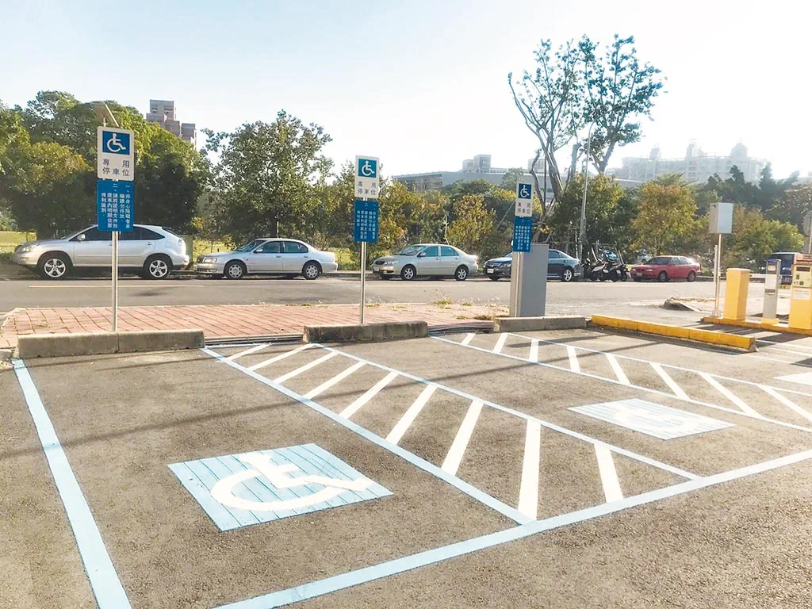
電梯 建築線（道路或人行道）至建築物主要出入口，或基地內各幢建築物間，設有引導設施，可使行動不便者獨立進出及通行之室外連續通路。 廁所 建築物於避難層開向屋外之出入口，除依前條規定者外，應依左列規定： 一、建築物使用類組為A-1組者在避難層供公眾使用之出入口，應為外開門。 室外走廊 建築線（道路或人行道）至建築物主要出入口，或基地內各幢建築物間，設有引導設施，可使行動不便者獨立進出及通行之室外連續通路。 避難層出入口 建築物於避難層開向屋外之出入口，除依前條規定者外，應依左列規定： 一、建築物使用類組為A-1組者在避難層供公眾使用之出入口，應為外開門。 無障礙坡道 斜坡道是替代樓梯的重要設施，能夠讓輪椅使用者、推車以及其他行動不便者更容易通行。 設計時需要考慮坡度、寬度和表面防滑等因素，確保安全和便捷。 停車位 無障礙停車位應設於最靠近建築物無障礙出入口或無障礙昇降機之便捷處。並應於車道入口處及車道沿路轉彎處設置明顯之指引標誌，引導無障礙停車之方向及位置。入口引導標誌應與行進方向垂直，以利辨識。 室內出入口 建築線（道路或人行道）至建築物主要出入口，或基地內各幢建築物間，設有引導設施，可使行動不便者獨立進出及通行之室外連續通路。 室內走廊 建築物於避難層開向屋外之出入口，除依前條規定者外，應依左列規定： 一、建築物使用類組為A-1組者在避難層供公眾使用之出入口，應為外開門。 樓梯 斜坡道是替代樓梯的重要設施，能夠讓輪椅使用者、推車以及其他行動不便者更容易通行。 設計時需要考慮坡度、寬度和表面防滑等因素，確保安全和便捷。 一般男廁 無障礙停車位應設於最靠近建築物無障礙出入口或無障礙昇降機之便捷處。並應於車道入口處及車道沿路轉彎處設置明顯之指引標誌，引導無障礙停車之方向及位置。入口引導標誌應與行進方向垂直，以利辨識。 浴室 無障礙停車位應設於最靠近建築物無障礙出入口或無障礙昇降機之便捷處。並應於車道入口處及車道沿路轉彎處設置明顯之指引標誌，引導無障礙停車之方向及位置。入口引導標誌應與行進方向垂直，以利辨識。 觀眾席 無障礙停車位應設於最靠近建築物無障礙出入口或無障礙昇降機之便捷處。並應於車道入口處及車道沿路轉彎處設置明顯之指引標誌，引導無障礙停車之方向及位置。入口引導標誌應與行進方向垂直，以利辨識。 室外出入口 無障礙停車位應設於最靠近建築物無障礙出入口或無障礙昇降機之便捷處。並應於車道入口處及車道沿路轉彎處設置明顯之指引標誌，引導無障礙停車之方向及位置。入口引導標誌應與行進方向垂直，以利辨識。 無障礙寢室 無障礙停車位應設於最靠近建築物無障礙出入口或無障礙昇降機之便捷處。並應於車道入口處及車道沿路轉彎處設置明顯之指引標誌，引導無障礙停車之方向及位置。入口引導標誌應與行進方向垂直，以利辨識。 其他設施 無障礙停車位應設於最靠近建築物無障礙出入口或無障礙昇降機之便捷處。並應於車道入口處及車道沿路轉彎處設置明顯之指引標誌，引導無障礙停車之方向及位置。入口引導標誌應與行進方向垂直，以利辨識。 機車停車位 無障礙停車位應設於最靠近建築物無障礙出入口或無障礙昇降機之便捷處。並應於車道入口處及車道沿路轉彎處設置明顯之指引標誌，引導無障礙停車之方向及位置。入口引導標誌應與行進方向垂直，以利辨識。 使用步驟 步驟一：確定學校 透過自動定位判斷離您最近的學校，或是由您自自行手動選擇 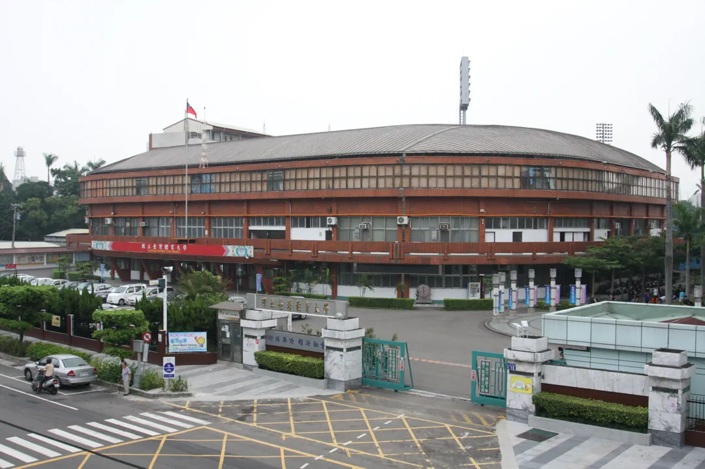 步驟二：確認校區 透過自動定位判斷離您最近的學校校區，或是由您自行手動選擇 步驟三：快速查詢 透過快速查詢列及選取常用的選取，進行設施查詢 步驟四：精準查詢 過"進階查詢"篩選條件常用設施、其他設施、建物等相關資訊縮小查詢範圍 步驟五：完成！ 其他設施 避難層出入口 避難層出入口設計請參考內政部 樓梯 建築物依規定應設置無障礙樓梯者，其設計請參考內政部 室內走廊 可使行動不便者獨立進出及通行之室內連續通路、走廊 觀眾席 設有固定座椅席位場所之輪椅觀眾席位 室外出入口 活動場所應依外部交通動線、停車空間等因素，設置至少一處主要出入口 無障礙寢室 宿舍無障礙寢室得參考本項（客房）相關規範辦理 其他設施 非屬前述項目之設施，如傢俱等。 機車停車位 參照內政部 無障礙設施規範 網站常用功能 快速查詢 快速定位您的位置，查詢周圍附近設施 設施全覽 指定目標學校，事先了解各項設施 FAQ 常見問答 空間分析是什麼意思？ 地理資訊系統很重要的一環，廣義而言，它指的是透過空間資料來運算，試圖找出各種事件在地理空間上有和關聯的一門科學。 快速查詢與空間分析有何不同？ 快速查詢:輸入查詢點的名稱後，就可找出所在位置與該地點資訊。 空間分析:是透過空間資料來運算，試圖找出各種事件在地理空間上有和關聯的一門科學。 如何與地圖進行互動查詢？ 用此工具，您可以查看互動式卡片，並提供地圖上區域的特定詳細數據。 FAQ 常見問答 空間分析是什麼意思？ 地理資訊系統很重要的一環，廣義而言，它指的是透過空間資料來運算，試圖找出各種事件在地理空間上有和關聯的一門科學。 快速查詢與空間分析有何不同？ 快速查詢:輸入查詢點的名稱後，就可找出所在位置與該地點資訊。 空間分析:是透過空間資料來運算，試圖找出各種事件在地理空間上有和關聯的一門科學。 如何與地圖進行互動查詢？ 用此工具，您可以查看互動式卡片，並提供地圖上區域的特定詳細數據。 系統登入 登入本系統，您的搜尋記錄永不遺漏 FAQ 常見問答 系統使用指南，讓快速上手 常見問題 空間分析是什麼意思？ 地理資訊系統很重要的一環，廣義而言，它指的是透過空間資料來運算，試圖找出各種事件在地理空間上有和關聯的一門科學。 快速查詢與空間分析有何不同？ 快速查詢:輸入查詢點的名稱後，就可找出所在位置與該地點資訊。 空間分析:是透過空間資料來運算，試圖找出各種事件在地理空間上有和關聯的一門科學。 如何與地圖進行互動查詢？ 用此工具，您可以查看互動式卡片，並提供地圖上區域的特定詳細數據。 回頂端 樓梯 目前顯示第1張，共3張 設施圖片說明一 設施圖片說明二 設施圖片說明三 1. 建築物設置規範請參考內政部《建築技術規則建築設計施工編》第10章及其下第167-2條規定。2. 建築物依規定應設置無障礙樓梯者，其設計請參考內政部《建築物無障礙設施設計規範》第3章規定。 3. 樓梯扶手請列入本項，其設計請參考內政部《建築物無障礙設施設計規範》207規定。 4. 民國97年7月1日《建築技術規則》修正施行前取得建造執照而未符合其規定者，倘改善確有困難，得參考《既有公共建築物無障礙設施替代改善計畫作業程序及認定原則》辦理。
廁所 建築物於避難層開向屋外之出入口，除依前條規定者外，應依左列規定： 一、建築物使用類組為A-1組者在避難層供公眾使用之出入口，應為外開門。 室外走廊 建築線（道路或人行道）至建築物主要出入口，或基地內各幢建築物間，設有引導設施，可使行動不便者獨立進出及通行之室外連續通路。 避難層出入口 建築物於避難層開向屋外之出入口，除依前條規定者外，應依左列規定： 一、建築物使用類組為A-1組者在避難層供公眾使用之出入口，應為外開門。 無障礙坡道 斜坡道是替代樓梯的重要設施，能夠讓輪椅使用者、推車以及其他行動不便者更容易通行。 設計時需要考慮坡度、寬度和表面防滑等因素，確保安全和便捷。 停車位 無障礙停車位應設於最靠近建築物無障礙出入口或無障礙昇降機之便捷處。並應於車道入口處及車道沿路轉彎處設置明顯之指引標誌，引導無障礙停車之方向及位置。入口引導標誌應與行進方向垂直，以利辨識。 室內出入口 建築線（道路或人行道）至建築物主要出入口，或基地內各幢建築物間，設有引導設施，可使行動不便者獨立進出及通行之室外連續通路。 室內走廊 建築物於避難層開向屋外之出入口，除依前條規定者外，應依左列規定： 一、建築物使用類組為A-1組者在避難層供公眾使用之出入口，應為外開門。 樓梯 斜坡道是替代樓梯的重要設施，能夠讓輪椅使用者、推車以及其他行動不便者更容易通行。 設計時需要考慮坡度、寬度和表面防滑等因素，確保安全和便捷。 一般男廁 無障礙停車位應設於最靠近建築物無障礙出入口或無障礙昇降機之便捷處。並應於車道入口處及車道沿路轉彎處設置明顯之指引標誌，引導無障礙停車之方向及位置。入口引導標誌應與行進方向垂直，以利辨識。 浴室 無障礙停車位應設於最靠近建築物無障礙出入口或無障礙昇降機之便捷處。並應於車道入口處及車道沿路轉彎處設置明顯之指引標誌，引導無障礙停車之方向及位置。入口引導標誌應與行進方向垂直，以利辨識。 觀眾席 無障礙停車位應設於最靠近建築物無障礙出入口或無障礙昇降機之便捷處。並應於車道入口處及車道沿路轉彎處設置明顯之指引標誌，引導無障礙停車之方向及位置。入口引導標誌應與行進方向垂直，以利辨識。 室外出入口 無障礙停車位應設於最靠近建築物無障礙出入口或無障礙昇降機之便捷處。並應於車道入口處及車道沿路轉彎處設置明顯之指引標誌，引導無障礙停車之方向及位置。入口引導標誌應與行進方向垂直，以利辨識。 無障礙寢室 無障礙停車位應設於最靠近建築物無障礙出入口或無障礙昇降機之便捷處。並應於車道入口處及車道沿路轉彎處設置明顯之指引標誌，引導無障礙停車之方向及位置。入口引導標誌應與行進方向垂直，以利辨識。 其他設施 無障礙停車位應設於最靠近建築物無障礙出入口或無障礙昇降機之便捷處。並應於車道入口處及車道沿路轉彎處設置明顯之指引標誌，引導無障礙停車之方向及位置。入口引導標誌應與行進方向垂直，以利辨識。 機車停車位 無障礙停車位應設於最靠近建築物無障礙出入口或無障礙昇降機之便捷處。並應於車道入口處及車道沿路轉彎處設置明顯之指引標誌，引導無障礙停車之方向及位置。入口引導標誌應與行進方向垂直，以利辨識。 使用步驟 步驟一：確定學校 透過自動定位判斷離您最近的學校，或是由您自自行手動選擇 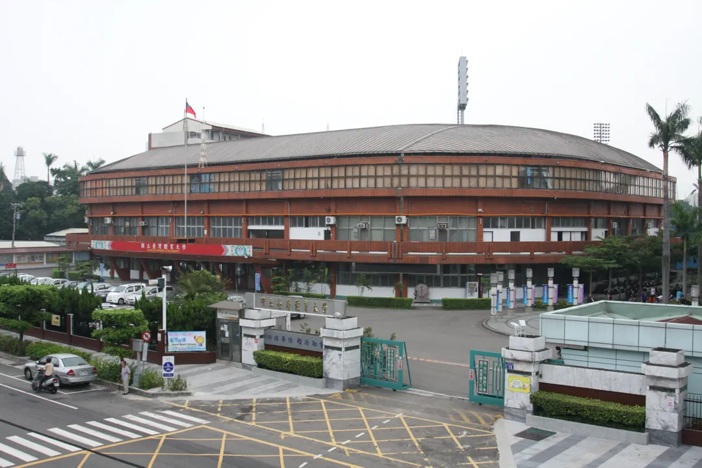 步驟二：確認校區 透過自動定位判斷離您最近的學校校區，或是由您自行手動選擇 步驟三：快速查詢 透過快速查詢列及選取常用的選取，進行設施查詢 步驟四：精準查詢 過"進階查詢"篩選條件常用設施、其他設施、建物等相關資訊縮小查詢範圍 步驟五：完成！ 其他設施 避難層出入口 避難層出入口設計請參考內政部 樓梯 建築物依規定應設置無障礙樓梯者，其設計請參考內政部 室內走廊 可使行動不便者獨立進出及通行之室內連續通路、走廊 觀眾席 設有固定座椅席位場所之輪椅觀眾席位 室外出入口 活動場所應依外部交通動線、停車空間等因素，設置至少一處主要出入口 無障礙寢室 宿舍無障礙寢室得參考本項（客房）相關規範辦理 其他設施 非屬前述項目之設施，如傢俱等。 機車停車位 參照內政部 無障礙設施規範 網站常用功能 快速查詢 快速定位您的位置，查詢周圍附近設施 設施全覽 指定目標學校，事先了解各項設施 FAQ 常見問答 空間分析是什麼意思？ 地理資訊系統很重要的一環，廣義而言，它指的是透過空間資料來運算，試圖找出各種事件在地理空間上有和關聯的一門科學。 快速查詢與空間分析有何不同？ 快速查詢:輸入查詢點的名稱後，就可找出所在位置與該地點資訊。 空間分析:是透過空間資料來運算，試圖找出各種事件在地理空間上有和關聯的一門科學。 如何與地圖進行互動查詢？ 用此工具，您可以查看互動式卡片，並提供地圖上區域的特定詳細數據。 FAQ 常見問答 空間分析是什麼意思？ 地理資訊系統很重要的一環，廣義而言，它指的是透過空間資料來運算，試圖找出各種事件在地理空間上有和關聯的一門科學。 快速查詢與空間分析有何不同？ 快速查詢:輸入查詢點的名稱後，就可找出所在位置與該地點資訊。 空間分析:是透過空間資料來運算，試圖找出各種事件在地理空間上有和關聯的一門科學。 如何與地圖進行互動查詢？ 用此工具，您可以查看互動式卡片，並提供地圖上區域的特定詳細數據。 系統登入 登入本系統，您的搜尋記錄永不遺漏 FAQ 常見問答 系統使用指南，讓快速上手 常見問題 空間分析是什麼意思？ 地理資訊系統很重要的一環，廣義而言，它指的是透過空間資料來運算，試圖找出各種事件在地理空間上有和關聯的一門科學。 快速查詢與空間分析有何不同？ 快速查詢:輸入查詢點的名稱後，就可找出所在位置與該地點資訊。 空間分析:是透過空間資料來運算，試圖找出各種事件在地理空間上有和關聯的一門科學。 如何與地圖進行互動查詢？ 用此工具，您可以查看互動式卡片，並提供地圖上區域的特定詳細數據。 回頂端 樓梯 目前顯示第1張，共3張 設施圖片說明一 設施圖片說明二 設施圖片說明三 1. 建築物設置規範請參考內政部《建築技術規則建築設計施工編》第10章及其下第167-2條規定。2. 建築物依規定應設置無障礙樓梯者，其設計請參考內政部《建築物無障礙設施設計規範》第3章規定。 3. 樓梯扶手請列入本項，其設計請參考內政部《建築物無障礙設施設計規範》207規定。 4. 民國97年7月1日《建築技術規則》修正施行前取得建造執照而未符合其規定者，倘改善確有困難，得參考《既有公共建築物無障礙設施替代改善計畫作業程序及認定原則》辦理。
室外走廊 建築線（道路或人行道）至建築物主要出入口，或基地內各幢建築物間，設有引導設施，可使行動不便者獨立進出及通行之室外連續通路。 避難層出入口 建築物於避難層開向屋外之出入口，除依前條規定者外，應依左列規定： 一、建築物使用類組為A-1組者在避難層供公眾使用之出入口，應為外開門。 無障礙坡道 斜坡道是替代樓梯的重要設施，能夠讓輪椅使用者、推車以及其他行動不便者更容易通行。 設計時需要考慮坡度、寬度和表面防滑等因素，確保安全和便捷。 停車位 無障礙停車位應設於最靠近建築物無障礙出入口或無障礙昇降機之便捷處。並應於車道入口處及車道沿路轉彎處設置明顯之指引標誌，引導無障礙停車之方向及位置。入口引導標誌應與行進方向垂直，以利辨識。 室內出入口 建築線（道路或人行道）至建築物主要出入口，或基地內各幢建築物間，設有引導設施，可使行動不便者獨立進出及通行之室外連續通路。 室內走廊 建築物於避難層開向屋外之出入口，除依前條規定者外，應依左列規定： 一、建築物使用類組為A-1組者在避難層供公眾使用之出入口，應為外開門。 樓梯 斜坡道是替代樓梯的重要設施，能夠讓輪椅使用者、推車以及其他行動不便者更容易通行。 設計時需要考慮坡度、寬度和表面防滑等因素，確保安全和便捷。 一般男廁 無障礙停車位應設於最靠近建築物無障礙出入口或無障礙昇降機之便捷處。並應於車道入口處及車道沿路轉彎處設置明顯之指引標誌，引導無障礙停車之方向及位置。入口引導標誌應與行進方向垂直，以利辨識。 浴室 無障礙停車位應設於最靠近建築物無障礙出入口或無障礙昇降機之便捷處。並應於車道入口處及車道沿路轉彎處設置明顯之指引標誌，引導無障礙停車之方向及位置。入口引導標誌應與行進方向垂直，以利辨識。 觀眾席 無障礙停車位應設於最靠近建築物無障礙出入口或無障礙昇降機之便捷處。並應於車道入口處及車道沿路轉彎處設置明顯之指引標誌，引導無障礙停車之方向及位置。入口引導標誌應與行進方向垂直，以利辨識。 室外出入口 無障礙停車位應設於最靠近建築物無障礙出入口或無障礙昇降機之便捷處。並應於車道入口處及車道沿路轉彎處設置明顯之指引標誌，引導無障礙停車之方向及位置。入口引導標誌應與行進方向垂直，以利辨識。 無障礙寢室 無障礙停車位應設於最靠近建築物無障礙出入口或無障礙昇降機之便捷處。並應於車道入口處及車道沿路轉彎處設置明顯之指引標誌，引導無障礙停車之方向及位置。入口引導標誌應與行進方向垂直，以利辨識。 其他設施 無障礙停車位應設於最靠近建築物無障礙出入口或無障礙昇降機之便捷處。並應於車道入口處及車道沿路轉彎處設置明顯之指引標誌，引導無障礙停車之方向及位置。入口引導標誌應與行進方向垂直，以利辨識。 機車停車位 無障礙停車位應設於最靠近建築物無障礙出入口或無障礙昇降機之便捷處。並應於車道入口處及車道沿路轉彎處設置明顯之指引標誌，引導無障礙停車之方向及位置。入口引導標誌應與行進方向垂直，以利辨識。 使用步驟 步驟一：確定學校 透過自動定位判斷離您最近的學校，或是由您自自行手動選擇 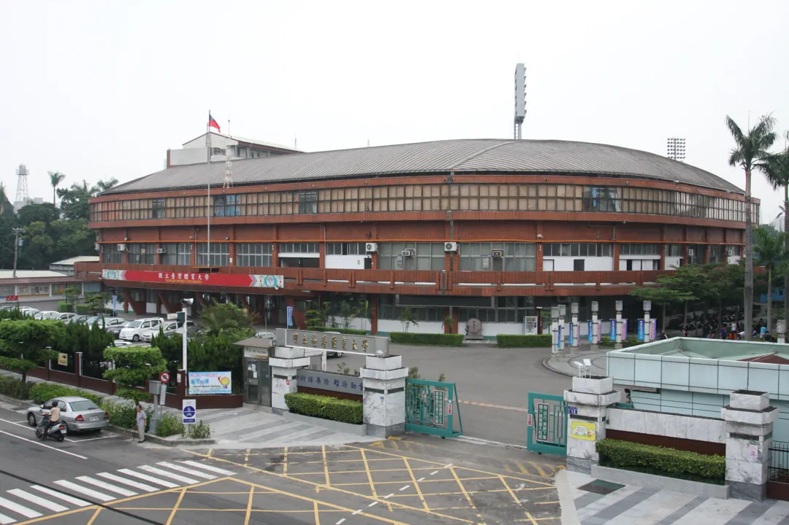 步驟二：確認校區 透過自動定位判斷離您最近的學校校區，或是由您自行手動選擇 步驟三：快速查詢 透過快速查詢列及選取常用的選取，進行設施查詢 步驟四：精準查詢 過"進階查詢"篩選條件常用設施、其他設施、建物等相關資訊縮小查詢範圍 步驟五：完成！ 其他設施 避難層出入口 避難層出入口設計請參考內政部 樓梯 建築物依規定應設置無障礙樓梯者，其設計請參考內政部 室內走廊 可使行動不便者獨立進出及通行之室內連續通路、走廊 觀眾席 設有固定座椅席位場所之輪椅觀眾席位 室外出入口 活動場所應依外部交通動線、停車空間等因素，設置至少一處主要出入口 無障礙寢室 宿舍無障礙寢室得參考本項（客房）相關規範辦理 其他設施 非屬前述項目之設施，如傢俱等。 機車停車位 參照內政部 無障礙設施規範 網站常用功能 快速查詢 快速定位您的位置，查詢周圍附近設施 設施全覽 指定目標學校，事先了解各項設施 FAQ 常見問答 空間分析是什麼意思？ 地理資訊系統很重要的一環，廣義而言，它指的是透過空間資料來運算，試圖找出各種事件在地理空間上有和關聯的一門科學。 快速查詢與空間分析有何不同？ 快速查詢:輸入查詢點的名稱後，就可找出所在位置與該地點資訊。 空間分析:是透過空間資料來運算，試圖找出各種事件在地理空間上有和關聯的一門科學。 如何與地圖進行互動查詢？ 用此工具，您可以查看互動式卡片，並提供地圖上區域的特定詳細數據。 FAQ 常見問答 空間分析是什麼意思？ 地理資訊系統很重要的一環，廣義而言，它指的是透過空間資料來運算，試圖找出各種事件在地理空間上有和關聯的一門科學。 快速查詢與空間分析有何不同？ 快速查詢:輸入查詢點的名稱後，就可找出所在位置與該地點資訊。 空間分析:是透過空間資料來運算，試圖找出各種事件在地理空間上有和關聯的一門科學。 如何與地圖進行互動查詢？ 用此工具，您可以查看互動式卡片，並提供地圖上區域的特定詳細數據。 系統登入 登入本系統，您的搜尋記錄永不遺漏 FAQ 常見問答 系統使用指南，讓快速上手 常見問題 空間分析是什麼意思？ 地理資訊系統很重要的一環，廣義而言，它指的是透過空間資料來運算，試圖找出各種事件在地理空間上有和關聯的一門科學。 快速查詢與空間分析有何不同？ 快速查詢:輸入查詢點的名稱後，就可找出所在位置與該地點資訊。 空間分析:是透過空間資料來運算，試圖找出各種事件在地理空間上有和關聯的一門科學。 如何與地圖進行互動查詢？ 用此工具，您可以查看互動式卡片，並提供地圖上區域的特定詳細數據。 回頂端 樓梯 目前顯示第1張，共3張 設施圖片說明一 設施圖片說明二 設施圖片說明三 1. 建築物設置規範請參考內政部《建築技術規則建築設計施工編》第10章及其下第167-2條規定。2. 建築物依規定應設置無障礙樓梯者，其設計請參考內政部《建築物無障礙設施設計規範》第3章規定。 3. 樓梯扶手請列入本項，其設計請參考內政部《建築物無障礙設施設計規範》207規定。 4. 民國97年7月1日《建築技術規則》修正施行前取得建造執照而未符合其規定者，倘改善確有困難，得參考《既有公共建築物無障礙設施替代改善計畫作業程序及認定原則》辦理。
避難層出入口 建築物於避難層開向屋外之出入口，除依前條規定者外，應依左列規定： 一、建築物使用類組為A-1組者在避難層供公眾使用之出入口，應為外開門。 無障礙坡道 斜坡道是替代樓梯的重要設施，能夠讓輪椅使用者、推車以及其他行動不便者更容易通行。 設計時需要考慮坡度、寬度和表面防滑等因素，確保安全和便捷。 停車位 無障礙停車位應設於最靠近建築物無障礙出入口或無障礙昇降機之便捷處。並應於車道入口處及車道沿路轉彎處設置明顯之指引標誌，引導無障礙停車之方向及位置。入口引導標誌應與行進方向垂直，以利辨識。 室內出入口 建築線（道路或人行道）至建築物主要出入口，或基地內各幢建築物間，設有引導設施，可使行動不便者獨立進出及通行之室外連續通路。 室內走廊 建築物於避難層開向屋外之出入口，除依前條規定者外，應依左列規定： 一、建築物使用類組為A-1組者在避難層供公眾使用之出入口，應為外開門。 樓梯 斜坡道是替代樓梯的重要設施，能夠讓輪椅使用者、推車以及其他行動不便者更容易通行。 設計時需要考慮坡度、寬度和表面防滑等因素，確保安全和便捷。 一般男廁 無障礙停車位應設於最靠近建築物無障礙出入口或無障礙昇降機之便捷處。並應於車道入口處及車道沿路轉彎處設置明顯之指引標誌，引導無障礙停車之方向及位置。入口引導標誌應與行進方向垂直，以利辨識。 浴室 無障礙停車位應設於最靠近建築物無障礙出入口或無障礙昇降機之便捷處。並應於車道入口處及車道沿路轉彎處設置明顯之指引標誌，引導無障礙停車之方向及位置。入口引導標誌應與行進方向垂直，以利辨識。 觀眾席 無障礙停車位應設於最靠近建築物無障礙出入口或無障礙昇降機之便捷處。並應於車道入口處及車道沿路轉彎處設置明顯之指引標誌，引導無障礙停車之方向及位置。入口引導標誌應與行進方向垂直，以利辨識。 室外出入口 無障礙停車位應設於最靠近建築物無障礙出入口或無障礙昇降機之便捷處。並應於車道入口處及車道沿路轉彎處設置明顯之指引標誌，引導無障礙停車之方向及位置。入口引導標誌應與行進方向垂直，以利辨識。 無障礙寢室 無障礙停車位應設於最靠近建築物無障礙出入口或無障礙昇降機之便捷處。並應於車道入口處及車道沿路轉彎處設置明顯之指引標誌，引導無障礙停車之方向及位置。入口引導標誌應與行進方向垂直，以利辨識。 其他設施 無障礙停車位應設於最靠近建築物無障礙出入口或無障礙昇降機之便捷處。並應於車道入口處及車道沿路轉彎處設置明顯之指引標誌，引導無障礙停車之方向及位置。入口引導標誌應與行進方向垂直，以利辨識。 機車停車位 無障礙停車位應設於最靠近建築物無障礙出入口或無障礙昇降機之便捷處。並應於車道入口處及車道沿路轉彎處設置明顯之指引標誌，引導無障礙停車之方向及位置。入口引導標誌應與行進方向垂直，以利辨識。 使用步驟 步驟一：確定學校 透過自動定位判斷離您最近的學校，或是由您自自行手動選擇 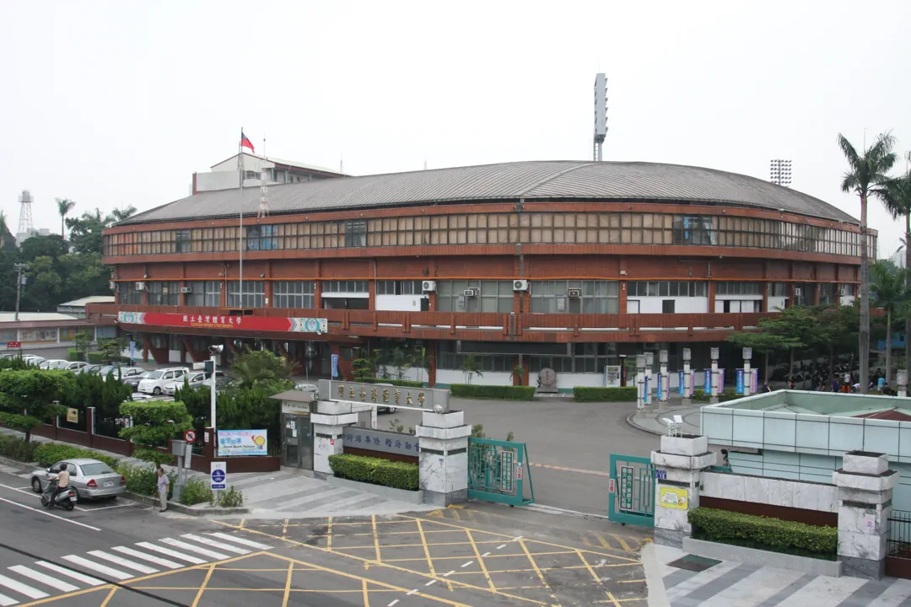 步驟二：確認校區 透過自動定位判斷離您最近的學校校區，或是由您自行手動選擇 步驟三：快速查詢 透過快速查詢列及選取常用的選取，進行設施查詢 步驟四：精準查詢 過"進階查詢"篩選條件常用設施、其他設施、建物等相關資訊縮小查詢範圍 步驟五：完成！ 其他設施 避難層出入口 避難層出入口設計請參考內政部 樓梯 建築物依規定應設置無障礙樓梯者，其設計請參考內政部 室內走廊 可使行動不便者獨立進出及通行之室內連續通路、走廊 觀眾席 設有固定座椅席位場所之輪椅觀眾席位 室外出入口 活動場所應依外部交通動線、停車空間等因素，設置至少一處主要出入口 無障礙寢室 宿舍無障礙寢室得參考本項（客房）相關規範辦理 其他設施 非屬前述項目之設施，如傢俱等。 機車停車位 參照內政部 無障礙設施規範 網站常用功能 快速查詢 快速定位您的位置，查詢周圍附近設施 設施全覽 指定目標學校，事先了解各項設施 FAQ 常見問答 空間分析是什麼意思？ 地理資訊系統很重要的一環，廣義而言，它指的是透過空間資料來運算，試圖找出各種事件在地理空間上有和關聯的一門科學。 快速查詢與空間分析有何不同？ 快速查詢:輸入查詢點的名稱後，就可找出所在位置與該地點資訊。 空間分析:是透過空間資料來運算，試圖找出各種事件在地理空間上有和關聯的一門科學。 如何與地圖進行互動查詢？ 用此工具，您可以查看互動式卡片，並提供地圖上區域的特定詳細數據。 FAQ 常見問答 空間分析是什麼意思？ 地理資訊系統很重要的一環，廣義而言，它指的是透過空間資料來運算，試圖找出各種事件在地理空間上有和關聯的一門科學。 快速查詢與空間分析有何不同？ 快速查詢:輸入查詢點的名稱後，就可找出所在位置與該地點資訊。 空間分析:是透過空間資料來運算，試圖找出各種事件在地理空間上有和關聯的一門科學。 如何與地圖進行互動查詢？ 用此工具，您可以查看互動式卡片，並提供地圖上區域的特定詳細數據。 系統登入 登入本系統，您的搜尋記錄永不遺漏 FAQ 常見問答 系統使用指南，讓快速上手 常見問題 空間分析是什麼意思？ 地理資訊系統很重要的一環，廣義而言，它指的是透過空間資料來運算，試圖找出各種事件在地理空間上有和關聯的一門科學。 快速查詢與空間分析有何不同？ 快速查詢:輸入查詢點的名稱後，就可找出所在位置與該地點資訊。 空間分析:是透過空間資料來運算，試圖找出各種事件在地理空間上有和關聯的一門科學。 如何與地圖進行互動查詢？ 用此工具，您可以查看互動式卡片，並提供地圖上區域的特定詳細數據。 回頂端 樓梯 目前顯示第1張，共3張 設施圖片說明一 設施圖片說明二 設施圖片說明三 1. 建築物設置規範請參考內政部《建築技術規則建築設計施工編》第10章及其下第167-2條規定。2. 建築物依規定應設置無障礙樓梯者，其設計請參考內政部《建築物無障礙設施設計規範》第3章規定。 3. 樓梯扶手請列入本項，其設計請參考內政部《建築物無障礙設施設計規範》207規定。 4. 民國97年7月1日《建築技術規則》修正施行前取得建造執照而未符合其規定者，倘改善確有困難，得參考《既有公共建築物無障礙設施替代改善計畫作業程序及認定原則》辦理。
無障礙坡道 斜坡道是替代樓梯的重要設施，能夠讓輪椅使用者、推車以及其他行動不便者更容易通行。 設計時需要考慮坡度、寬度和表面防滑等因素，確保安全和便捷。 停車位 無障礙停車位應設於最靠近建築物無障礙出入口或無障礙昇降機之便捷處。並應於車道入口處及車道沿路轉彎處設置明顯之指引標誌，引導無障礙停車之方向及位置。入口引導標誌應與行進方向垂直，以利辨識。 室內出入口 建築線（道路或人行道）至建築物主要出入口，或基地內各幢建築物間，設有引導設施，可使行動不便者獨立進出及通行之室外連續通路。 室內走廊 建築物於避難層開向屋外之出入口，除依前條規定者外，應依左列規定： 一、建築物使用類組為A-1組者在避難層供公眾使用之出入口，應為外開門。 樓梯 斜坡道是替代樓梯的重要設施，能夠讓輪椅使用者、推車以及其他行動不便者更容易通行。 設計時需要考慮坡度、寬度和表面防滑等因素，確保安全和便捷。 一般男廁 無障礙停車位應設於最靠近建築物無障礙出入口或無障礙昇降機之便捷處。並應於車道入口處及車道沿路轉彎處設置明顯之指引標誌，引導無障礙停車之方向及位置。入口引導標誌應與行進方向垂直，以利辨識。 浴室 無障礙停車位應設於最靠近建築物無障礙出入口或無障礙昇降機之便捷處。並應於車道入口處及車道沿路轉彎處設置明顯之指引標誌，引導無障礙停車之方向及位置。入口引導標誌應與行進方向垂直，以利辨識。 觀眾席 無障礙停車位應設於最靠近建築物無障礙出入口或無障礙昇降機之便捷處。並應於車道入口處及車道沿路轉彎處設置明顯之指引標誌，引導無障礙停車之方向及位置。入口引導標誌應與行進方向垂直，以利辨識。 室外出入口 無障礙停車位應設於最靠近建築物無障礙出入口或無障礙昇降機之便捷處。並應於車道入口處及車道沿路轉彎處設置明顯之指引標誌，引導無障礙停車之方向及位置。入口引導標誌應與行進方向垂直，以利辨識。 無障礙寢室 無障礙停車位應設於最靠近建築物無障礙出入口或無障礙昇降機之便捷處。並應於車道入口處及車道沿路轉彎處設置明顯之指引標誌，引導無障礙停車之方向及位置。入口引導標誌應與行進方向垂直，以利辨識。 其他設施 無障礙停車位應設於最靠近建築物無障礙出入口或無障礙昇降機之便捷處。並應於車道入口處及車道沿路轉彎處設置明顯之指引標誌，引導無障礙停車之方向及位置。入口引導標誌應與行進方向垂直，以利辨識。 機車停車位 無障礙停車位應設於最靠近建築物無障礙出入口或無障礙昇降機之便捷處。並應於車道入口處及車道沿路轉彎處設置明顯之指引標誌，引導無障礙停車之方向及位置。入口引導標誌應與行進方向垂直，以利辨識。 使用步驟 步驟一：確定學校 透過自動定位判斷離您最近的學校，或是由您自自行手動選擇 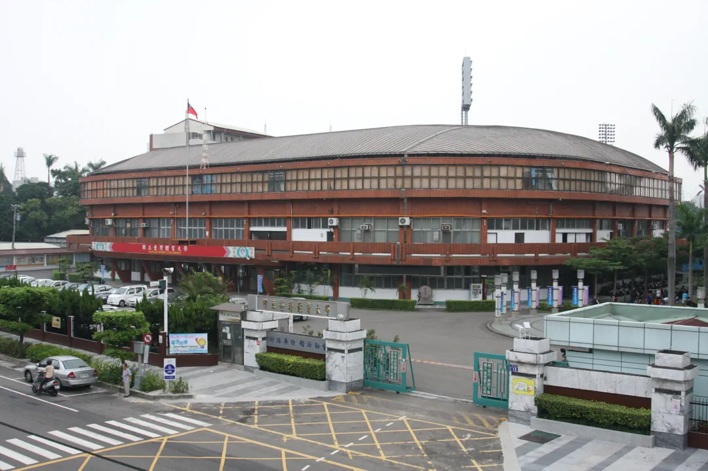 步驟二：確認校區 透過自動定位判斷離您最近的學校校區，或是由您自行手動選擇 步驟三：快速查詢 透過快速查詢列及選取常用的選取，進行設施查詢 步驟四：精準查詢 過"進階查詢"篩選條件常用設施、其他設施、建物等相關資訊縮小查詢範圍 步驟五：完成！ 其他設施 避難層出入口 避難層出入口設計請參考內政部 樓梯 建築物依規定應設置無障礙樓梯者，其設計請參考內政部 室內走廊 可使行動不便者獨立進出及通行之室內連續通路、走廊 觀眾席 設有固定座椅席位場所之輪椅觀眾席位 室外出入口 活動場所應依外部交通動線、停車空間等因素，設置至少一處主要出入口 無障礙寢室 宿舍無障礙寢室得參考本項（客房）相關規範辦理 其他設施 非屬前述項目之設施，如傢俱等。 機車停車位 參照內政部 無障礙設施規範 網站常用功能 快速查詢 快速定位您的位置，查詢周圍附近設施 設施全覽 指定目標學校，事先了解各項設施 FAQ 常見問答 空間分析是什麼意思？ 地理資訊系統很重要的一環，廣義而言，它指的是透過空間資料來運算，試圖找出各種事件在地理空間上有和關聯的一門科學。 快速查詢與空間分析有何不同？ 快速查詢:輸入查詢點的名稱後，就可找出所在位置與該地點資訊。 空間分析:是透過空間資料來運算，試圖找出各種事件在地理空間上有和關聯的一門科學。 如何與地圖進行互動查詢？ 用此工具，您可以查看互動式卡片，並提供地圖上區域的特定詳細數據。 FAQ 常見問答 空間分析是什麼意思？ 地理資訊系統很重要的一環，廣義而言，它指的是透過空間資料來運算，試圖找出各種事件在地理空間上有和關聯的一門科學。 快速查詢與空間分析有何不同？ 快速查詢:輸入查詢點的名稱後，就可找出所在位置與該地點資訊。 空間分析:是透過空間資料來運算，試圖找出各種事件在地理空間上有和關聯的一門科學。 如何與地圖進行互動查詢？ 用此工具，您可以查看互動式卡片，並提供地圖上區域的特定詳細數據。 系統登入 登入本系統，您的搜尋記錄永不遺漏 FAQ 常見問答 系統使用指南，讓快速上手 常見問題 空間分析是什麼意思？ 地理資訊系統很重要的一環，廣義而言，它指的是透過空間資料來運算，試圖找出各種事件在地理空間上有和關聯的一門科學。 快速查詢與空間分析有何不同？ 快速查詢:輸入查詢點的名稱後，就可找出所在位置與該地點資訊。 空間分析:是透過空間資料來運算，試圖找出各種事件在地理空間上有和關聯的一門科學。 如何與地圖進行互動查詢？ 用此工具，您可以查看互動式卡片，並提供地圖上區域的特定詳細數據。 回頂端 樓梯 目前顯示第1張，共3張 設施圖片說明一 設施圖片說明二 設施圖片說明三 1. 建築物設置規範請參考內政部《建築技術規則建築設計施工編》第10章及其下第167-2條規定。2. 建築物依規定應設置無障礙樓梯者，其設計請參考內政部《建築物無障礙設施設計規範》第3章規定。 3. 樓梯扶手請列入本項，其設計請參考內政部《建築物無障礙設施設計規範》207規定。 4. 民國97年7月1日《建築技術規則》修正施行前取得建造執照而未符合其規定者，倘改善確有困難，得參考《既有公共建築物無障礙設施替代改善計畫作業程序及認定原則》辦理。
停車位 無障礙停車位應設於最靠近建築物無障礙出入口或無障礙昇降機之便捷處。並應於車道入口處及車道沿路轉彎處設置明顯之指引標誌，引導無障礙停車之方向及位置。入口引導標誌應與行進方向垂直，以利辨識。 室內出入口 建築線（道路或人行道）至建築物主要出入口，或基地內各幢建築物間，設有引導設施，可使行動不便者獨立進出及通行之室外連續通路。 室內走廊 建築物於避難層開向屋外之出入口，除依前條規定者外，應依左列規定： 一、建築物使用類組為A-1組者在避難層供公眾使用之出入口，應為外開門。 樓梯 斜坡道是替代樓梯的重要設施，能夠讓輪椅使用者、推車以及其他行動不便者更容易通行。 設計時需要考慮坡度、寬度和表面防滑等因素，確保安全和便捷。 一般男廁 無障礙停車位應設於最靠近建築物無障礙出入口或無障礙昇降機之便捷處。並應於車道入口處及車道沿路轉彎處設置明顯之指引標誌，引導無障礙停車之方向及位置。入口引導標誌應與行進方向垂直，以利辨識。 浴室 無障礙停車位應設於最靠近建築物無障礙出入口或無障礙昇降機之便捷處。並應於車道入口處及車道沿路轉彎處設置明顯之指引標誌，引導無障礙停車之方向及位置。入口引導標誌應與行進方向垂直，以利辨識。 觀眾席 無障礙停車位應設於最靠近建築物無障礙出入口或無障礙昇降機之便捷處。並應於車道入口處及車道沿路轉彎處設置明顯之指引標誌，引導無障礙停車之方向及位置。入口引導標誌應與行進方向垂直，以利辨識。 室外出入口 無障礙停車位應設於最靠近建築物無障礙出入口或無障礙昇降機之便捷處。並應於車道入口處及車道沿路轉彎處設置明顯之指引標誌，引導無障礙停車之方向及位置。入口引導標誌應與行進方向垂直，以利辨識。 無障礙寢室 無障礙停車位應設於最靠近建築物無障礙出入口或無障礙昇降機之便捷處。並應於車道入口處及車道沿路轉彎處設置明顯之指引標誌，引導無障礙停車之方向及位置。入口引導標誌應與行進方向垂直，以利辨識。 其他設施 無障礙停車位應設於最靠近建築物無障礙出入口或無障礙昇降機之便捷處。並應於車道入口處及車道沿路轉彎處設置明顯之指引標誌，引導無障礙停車之方向及位置。入口引導標誌應與行進方向垂直，以利辨識。 機車停車位 無障礙停車位應設於最靠近建築物無障礙出入口或無障礙昇降機之便捷處。並應於車道入口處及車道沿路轉彎處設置明顯之指引標誌，引導無障礙停車之方向及位置。入口引導標誌應與行進方向垂直，以利辨識。 使用步驟 步驟一：確定學校 透過自動定位判斷離您最近的學校，或是由您自自行手動選擇 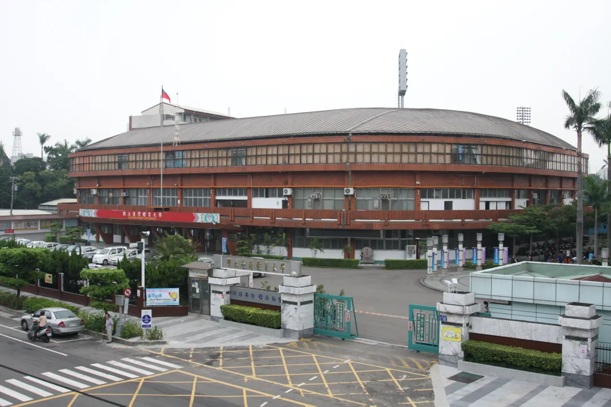 步驟二：確認校區 透過自動定位判斷離您最近的學校校區，或是由您自行手動選擇 步驟三：快速查詢 透過快速查詢列及選取常用的選取，進行設施查詢 步驟四：精準查詢 過"進階查詢"篩選條件常用設施、其他設施、建物等相關資訊縮小查詢範圍 步驟五：完成！ 其他設施 避難層出入口 避難層出入口設計請參考內政部 樓梯 建築物依規定應設置無障礙樓梯者，其設計請參考內政部 室內走廊 可使行動不便者獨立進出及通行之室內連續通路、走廊 觀眾席 設有固定座椅席位場所之輪椅觀眾席位 室外出入口 活動場所應依外部交通動線、停車空間等因素，設置至少一處主要出入口 無障礙寢室 宿舍無障礙寢室得參考本項（客房）相關規範辦理 其他設施 非屬前述項目之設施，如傢俱等。 機車停車位 參照內政部 無障礙設施規範 網站常用功能 快速查詢 快速定位您的位置，查詢周圍附近設施 設施全覽 指定目標學校，事先了解各項設施 FAQ 常見問答 空間分析是什麼意思？ 地理資訊系統很重要的一環，廣義而言，它指的是透過空間資料來運算，試圖找出各種事件在地理空間上有和關聯的一門科學。 快速查詢與空間分析有何不同？ 快速查詢:輸入查詢點的名稱後，就可找出所在位置與該地點資訊。 空間分析:是透過空間資料來運算，試圖找出各種事件在地理空間上有和關聯的一門科學。 如何與地圖進行互動查詢？ 用此工具，您可以查看互動式卡片，並提供地圖上區域的特定詳細數據。 FAQ 常見問答 空間分析是什麼意思？ 地理資訊系統很重要的一環，廣義而言，它指的是透過空間資料來運算，試圖找出各種事件在地理空間上有和關聯的一門科學。 快速查詢與空間分析有何不同？ 快速查詢:輸入查詢點的名稱後，就可找出所在位置與該地點資訊。 空間分析:是透過空間資料來運算，試圖找出各種事件在地理空間上有和關聯的一門科學。 如何與地圖進行互動查詢？ 用此工具，您可以查看互動式卡片，並提供地圖上區域的特定詳細數據。 系統登入 登入本系統，您的搜尋記錄永不遺漏 FAQ 常見問答 系統使用指南，讓快速上手 常見問題 空間分析是什麼意思？ 地理資訊系統很重要的一環，廣義而言，它指的是透過空間資料來運算，試圖找出各種事件在地理空間上有和關聯的一門科學。 快速查詢與空間分析有何不同？ 快速查詢:輸入查詢點的名稱後，就可找出所在位置與該地點資訊。 空間分析:是透過空間資料來運算，試圖找出各種事件在地理空間上有和關聯的一門科學。 如何與地圖進行互動查詢？ 用此工具，您可以查看互動式卡片，並提供地圖上區域的特定詳細數據。 回頂端 樓梯 目前顯示第1張，共3張 設施圖片說明一 設施圖片說明二 設施圖片說明三 1. 建築物設置規範請參考內政部《建築技術規則建築設計施工編》第10章及其下第167-2條規定。2. 建築物依規定應設置無障礙樓梯者，其設計請參考內政部《建築物無障礙設施設計規範》第3章規定。 3. 樓梯扶手請列入本項，其設計請參考內政部《建築物無障礙設施設計規範》207規定。 4. 民國97年7月1日《建築技術規則》修正施行前取得建造執照而未符合其規定者，倘改善確有困難，得參考《既有公共建築物無障礙設施替代改善計畫作業程序及認定原則》辦理。
室內出入口 建築線（道路或人行道）至建築物主要出入口，或基地內各幢建築物間，設有引導設施，可使行動不便者獨立進出及通行之室外連續通路。 室內走廊 建築物於避難層開向屋外之出入口，除依前條規定者外，應依左列規定： 一、建築物使用類組為A-1組者在避難層供公眾使用之出入口，應為外開門。 樓梯 斜坡道是替代樓梯的重要設施，能夠讓輪椅使用者、推車以及其他行動不便者更容易通行。 設計時需要考慮坡度、寬度和表面防滑等因素，確保安全和便捷。 一般男廁 無障礙停車位應設於最靠近建築物無障礙出入口或無障礙昇降機之便捷處。並應於車道入口處及車道沿路轉彎處設置明顯之指引標誌，引導無障礙停車之方向及位置。入口引導標誌應與行進方向垂直，以利辨識。 浴室 無障礙停車位應設於最靠近建築物無障礙出入口或無障礙昇降機之便捷處。並應於車道入口處及車道沿路轉彎處設置明顯之指引標誌，引導無障礙停車之方向及位置。入口引導標誌應與行進方向垂直，以利辨識。 觀眾席 無障礙停車位應設於最靠近建築物無障礙出入口或無障礙昇降機之便捷處。並應於車道入口處及車道沿路轉彎處設置明顯之指引標誌，引導無障礙停車之方向及位置。入口引導標誌應與行進方向垂直，以利辨識。 室外出入口 無障礙停車位應設於最靠近建築物無障礙出入口或無障礙昇降機之便捷處。並應於車道入口處及車道沿路轉彎處設置明顯之指引標誌，引導無障礙停車之方向及位置。入口引導標誌應與行進方向垂直，以利辨識。 無障礙寢室 無障礙停車位應設於最靠近建築物無障礙出入口或無障礙昇降機之便捷處。並應於車道入口處及車道沿路轉彎處設置明顯之指引標誌，引導無障礙停車之方向及位置。入口引導標誌應與行進方向垂直，以利辨識。 其他設施 無障礙停車位應設於最靠近建築物無障礙出入口或無障礙昇降機之便捷處。並應於車道入口處及車道沿路轉彎處設置明顯之指引標誌，引導無障礙停車之方向及位置。入口引導標誌應與行進方向垂直，以利辨識。 機車停車位 無障礙停車位應設於最靠近建築物無障礙出入口或無障礙昇降機之便捷處。並應於車道入口處及車道沿路轉彎處設置明顯之指引標誌，引導無障礙停車之方向及位置。入口引導標誌應與行進方向垂直，以利辨識。 使用步驟 步驟一：確定學校 透過自動定位判斷離您最近的學校，或是由您自自行手動選擇 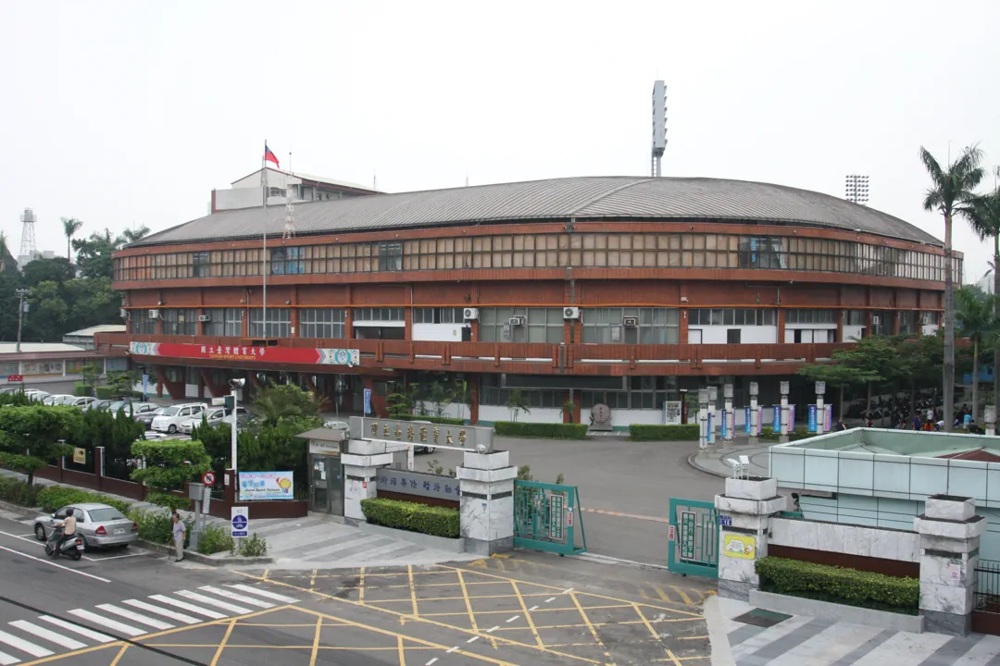 步驟二：確認校區 透過自動定位判斷離您最近的學校校區，或是由您自行手動選擇 步驟三：快速查詢 透過快速查詢列及選取常用的選取，進行設施查詢 步驟四：精準查詢 過"進階查詢"篩選條件常用設施、其他設施、建物等相關資訊縮小查詢範圍 步驟五：完成！ 其他設施 避難層出入口 避難層出入口設計請參考內政部 樓梯 建築物依規定應設置無障礙樓梯者，其設計請參考內政部 室內走廊 可使行動不便者獨立進出及通行之室內連續通路、走廊 觀眾席 設有固定座椅席位場所之輪椅觀眾席位 室外出入口 活動場所應依外部交通動線、停車空間等因素，設置至少一處主要出入口 無障礙寢室 宿舍無障礙寢室得參考本項（客房）相關規範辦理 其他設施 非屬前述項目之設施，如傢俱等。 機車停車位 參照內政部 無障礙設施規範 網站常用功能 快速查詢 快速定位您的位置，查詢周圍附近設施 設施全覽 指定目標學校，事先了解各項設施 FAQ 常見問答 空間分析是什麼意思？ 地理資訊系統很重要的一環，廣義而言，它指的是透過空間資料來運算，試圖找出各種事件在地理空間上有和關聯的一門科學。 快速查詢與空間分析有何不同？ 快速查詢:輸入查詢點的名稱後，就可找出所在位置與該地點資訊。 空間分析:是透過空間資料來運算，試圖找出各種事件在地理空間上有和關聯的一門科學。 如何與地圖進行互動查詢？ 用此工具，您可以查看互動式卡片，並提供地圖上區域的特定詳細數據。 FAQ 常見問答 空間分析是什麼意思？ 地理資訊系統很重要的一環，廣義而言，它指的是透過空間資料來運算，試圖找出各種事件在地理空間上有和關聯的一門科學。 快速查詢與空間分析有何不同？ 快速查詢:輸入查詢點的名稱後，就可找出所在位置與該地點資訊。 空間分析:是透過空間資料來運算，試圖找出各種事件在地理空間上有和關聯的一門科學。 如何與地圖進行互動查詢？ 用此工具，您可以查看互動式卡片，並提供地圖上區域的特定詳細數據。 系統登入 登入本系統，您的搜尋記錄永不遺漏 FAQ 常見問答 系統使用指南，讓快速上手 常見問題 空間分析是什麼意思？ 地理資訊系統很重要的一環，廣義而言，它指的是透過空間資料來運算，試圖找出各種事件在地理空間上有和關聯的一門科學。 快速查詢與空間分析有何不同？ 快速查詢:輸入查詢點的名稱後，就可找出所在位置與該地點資訊。 空間分析:是透過空間資料來運算，試圖找出各種事件在地理空間上有和關聯的一門科學。 如何與地圖進行互動查詢？ 用此工具，您可以查看互動式卡片，並提供地圖上區域的特定詳細數據。 回頂端 樓梯 目前顯示第1張，共3張 設施圖片說明一 設施圖片說明二 設施圖片說明三 1. 建築物設置規範請參考內政部《建築技術規則建築設計施工編》第10章及其下第167-2條規定。2. 建築物依規定應設置無障礙樓梯者，其設計請參考內政部《建築物無障礙設施設計規範》第3章規定。 3. 樓梯扶手請列入本項，其設計請參考內政部《建築物無障礙設施設計規範》207規定。 4. 民國97年7月1日《建築技術規則》修正施行前取得建造執照而未符合其規定者，倘改善確有困難，得參考《既有公共建築物無障礙設施替代改善計畫作業程序及認定原則》辦理。
室內走廊 建築物於避難層開向屋外之出入口，除依前條規定者外，應依左列規定： 一、建築物使用類組為A-1組者在避難層供公眾使用之出入口，應為外開門。 樓梯 斜坡道是替代樓梯的重要設施，能夠讓輪椅使用者、推車以及其他行動不便者更容易通行。 設計時需要考慮坡度、寬度和表面防滑等因素，確保安全和便捷。 一般男廁 無障礙停車位應設於最靠近建築物無障礙出入口或無障礙昇降機之便捷處。並應於車道入口處及車道沿路轉彎處設置明顯之指引標誌，引導無障礙停車之方向及位置。入口引導標誌應與行進方向垂直，以利辨識。 浴室 無障礙停車位應設於最靠近建築物無障礙出入口或無障礙昇降機之便捷處。並應於車道入口處及車道沿路轉彎處設置明顯之指引標誌，引導無障礙停車之方向及位置。入口引導標誌應與行進方向垂直，以利辨識。 觀眾席 無障礙停車位應設於最靠近建築物無障礙出入口或無障礙昇降機之便捷處。並應於車道入口處及車道沿路轉彎處設置明顯之指引標誌，引導無障礙停車之方向及位置。入口引導標誌應與行進方向垂直，以利辨識。 室外出入口 無障礙停車位應設於最靠近建築物無障礙出入口或無障礙昇降機之便捷處。並應於車道入口處及車道沿路轉彎處設置明顯之指引標誌，引導無障礙停車之方向及位置。入口引導標誌應與行進方向垂直，以利辨識。 無障礙寢室 無障礙停車位應設於最靠近建築物無障礙出入口或無障礙昇降機之便捷處。並應於車道入口處及車道沿路轉彎處設置明顯之指引標誌，引導無障礙停車之方向及位置。入口引導標誌應與行進方向垂直，以利辨識。 其他設施 無障礙停車位應設於最靠近建築物無障礙出入口或無障礙昇降機之便捷處。並應於車道入口處及車道沿路轉彎處設置明顯之指引標誌，引導無障礙停車之方向及位置。入口引導標誌應與行進方向垂直，以利辨識。 機車停車位 無障礙停車位應設於最靠近建築物無障礙出入口或無障礙昇降機之便捷處。並應於車道入口處及車道沿路轉彎處設置明顯之指引標誌，引導無障礙停車之方向及位置。入口引導標誌應與行進方向垂直，以利辨識。 使用步驟 步驟一：確定學校 透過自動定位判斷離您最近的學校，或是由您自自行手動選擇 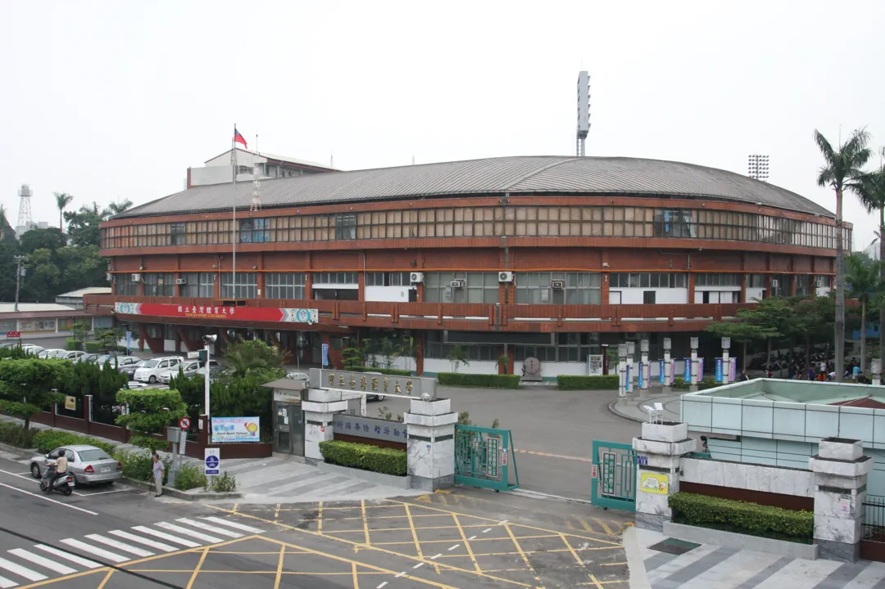 步驟二：確認校區 透過自動定位判斷離您最近的學校校區，或是由您自行手動選擇 步驟三：快速查詢 透過快速查詢列及選取常用的選取，進行設施查詢 步驟四：精準查詢 過"進階查詢"篩選條件常用設施、其他設施、建物等相關資訊縮小查詢範圍 步驟五：完成！ 其他設施 避難層出入口 避難層出入口設計請參考內政部 樓梯 建築物依規定應設置無障礙樓梯者，其設計請參考內政部 室內走廊 可使行動不便者獨立進出及通行之室內連續通路、走廊 觀眾席 設有固定座椅席位場所之輪椅觀眾席位 室外出入口 活動場所應依外部交通動線、停車空間等因素，設置至少一處主要出入口 無障礙寢室 宿舍無障礙寢室得參考本項（客房）相關規範辦理 其他設施 非屬前述項目之設施，如傢俱等。 機車停車位 參照內政部 無障礙設施規範 網站常用功能 快速查詢 快速定位您的位置，查詢周圍附近設施 設施全覽 指定目標學校，事先了解各項設施 FAQ 常見問答 空間分析是什麼意思？ 地理資訊系統很重要的一環，廣義而言，它指的是透過空間資料來運算，試圖找出各種事件在地理空間上有和關聯的一門科學。 快速查詢與空間分析有何不同？ 快速查詢:輸入查詢點的名稱後，就可找出所在位置與該地點資訊。 空間分析:是透過空間資料來運算，試圖找出各種事件在地理空間上有和關聯的一門科學。 如何與地圖進行互動查詢？ 用此工具，您可以查看互動式卡片，並提供地圖上區域的特定詳細數據。 FAQ 常見問答 空間分析是什麼意思？ 地理資訊系統很重要的一環，廣義而言，它指的是透過空間資料來運算，試圖找出各種事件在地理空間上有和關聯的一門科學。 快速查詢與空間分析有何不同？ 快速查詢:輸入查詢點的名稱後，就可找出所在位置與該地點資訊。 空間分析:是透過空間資料來運算，試圖找出各種事件在地理空間上有和關聯的一門科學。 如何與地圖進行互動查詢？ 用此工具，您可以查看互動式卡片，並提供地圖上區域的特定詳細數據。 系統登入 登入本系統，您的搜尋記錄永不遺漏 FAQ 常見問答 系統使用指南，讓快速上手 常見問題 空間分析是什麼意思？ 地理資訊系統很重要的一環，廣義而言，它指的是透過空間資料來運算，試圖找出各種事件在地理空間上有和關聯的一門科學。 快速查詢與空間分析有何不同？ 快速查詢:輸入查詢點的名稱後，就可找出所在位置與該地點資訊。 空間分析:是透過空間資料來運算，試圖找出各種事件在地理空間上有和關聯的一門科學。 如何與地圖進行互動查詢？ 用此工具，您可以查看互動式卡片，並提供地圖上區域的特定詳細數據。 回頂端 樓梯 目前顯示第1張，共3張 設施圖片說明一 設施圖片說明二 設施圖片說明三 1. 建築物設置規範請參考內政部《建築技術規則建築設計施工編》第10章及其下第167-2條規定。2. 建築物依規定應設置無障礙樓梯者，其設計請參考內政部《建築物無障礙設施設計規範》第3章規定。 3. 樓梯扶手請列入本項，其設計請參考內政部《建築物無障礙設施設計規範》207規定。 4. 民國97年7月1日《建築技術規則》修正施行前取得建造執照而未符合其規定者，倘改善確有困難，得參考《既有公共建築物無障礙設施替代改善計畫作業程序及認定原則》辦理。
樓梯 斜坡道是替代樓梯的重要設施，能夠讓輪椅使用者、推車以及其他行動不便者更容易通行。 設計時需要考慮坡度、寬度和表面防滑等因素，確保安全和便捷。 一般男廁 無障礙停車位應設於最靠近建築物無障礙出入口或無障礙昇降機之便捷處。並應於車道入口處及車道沿路轉彎處設置明顯之指引標誌，引導無障礙停車之方向及位置。入口引導標誌應與行進方向垂直，以利辨識。 浴室 無障礙停車位應設於最靠近建築物無障礙出入口或無障礙昇降機之便捷處。並應於車道入口處及車道沿路轉彎處設置明顯之指引標誌，引導無障礙停車之方向及位置。入口引導標誌應與行進方向垂直，以利辨識。 觀眾席 無障礙停車位應設於最靠近建築物無障礙出入口或無障礙昇降機之便捷處。並應於車道入口處及車道沿路轉彎處設置明顯之指引標誌，引導無障礙停車之方向及位置。入口引導標誌應與行進方向垂直，以利辨識。 室外出入口 無障礙停車位應設於最靠近建築物無障礙出入口或無障礙昇降機之便捷處。並應於車道入口處及車道沿路轉彎處設置明顯之指引標誌，引導無障礙停車之方向及位置。入口引導標誌應與行進方向垂直，以利辨識。 無障礙寢室 無障礙停車位應設於最靠近建築物無障礙出入口或無障礙昇降機之便捷處。並應於車道入口處及車道沿路轉彎處設置明顯之指引標誌，引導無障礙停車之方向及位置。入口引導標誌應與行進方向垂直，以利辨識。 其他設施 無障礙停車位應設於最靠近建築物無障礙出入口或無障礙昇降機之便捷處。並應於車道入口處及車道沿路轉彎處設置明顯之指引標誌，引導無障礙停車之方向及位置。入口引導標誌應與行進方向垂直，以利辨識。 機車停車位 無障礙停車位應設於最靠近建築物無障礙出入口或無障礙昇降機之便捷處。並應於車道入口處及車道沿路轉彎處設置明顯之指引標誌，引導無障礙停車之方向及位置。入口引導標誌應與行進方向垂直，以利辨識。 使用步驟 步驟一：確定學校 透過自動定位判斷離您最近的學校，或是由您自自行手動選擇 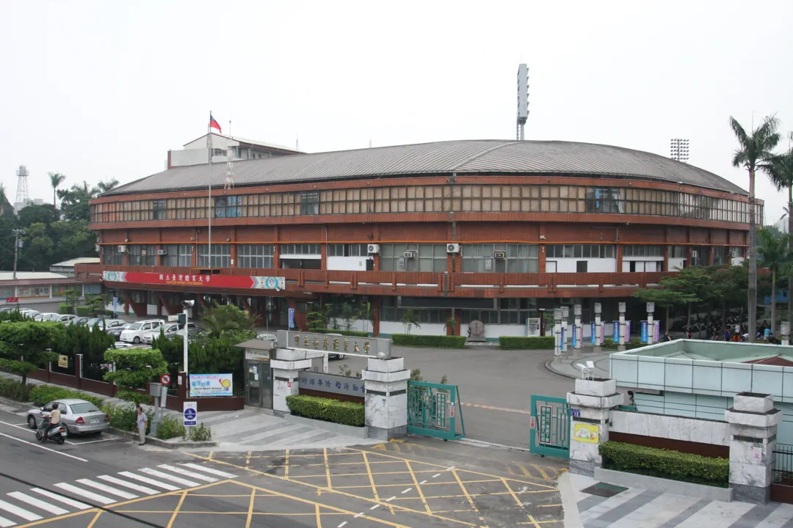 步驟二：確認校區 透過自動定位判斷離您最近的學校校區，或是由您自行手動選擇 步驟三：快速查詢 透過快速查詢列及選取常用的選取，進行設施查詢 步驟四：精準查詢 過"進階查詢"篩選條件常用設施、其他設施、建物等相關資訊縮小查詢範圍 步驟五：完成！ 其他設施 避難層出入口 避難層出入口設計請參考內政部 樓梯 建築物依規定應設置無障礙樓梯者，其設計請參考內政部 室內走廊 可使行動不便者獨立進出及通行之室內連續通路、走廊 觀眾席 設有固定座椅席位場所之輪椅觀眾席位 室外出入口 活動場所應依外部交通動線、停車空間等因素，設置至少一處主要出入口 無障礙寢室 宿舍無障礙寢室得參考本項（客房）相關規範辦理 其他設施 非屬前述項目之設施，如傢俱等。 機車停車位 參照內政部 無障礙設施規範 網站常用功能 快速查詢 快速定位您的位置，查詢周圍附近設施 設施全覽 指定目標學校，事先了解各項設施 FAQ 常見問答 空間分析是什麼意思？ 地理資訊系統很重要的一環，廣義而言，它指的是透過空間資料來運算，試圖找出各種事件在地理空間上有和關聯的一門科學。 快速查詢與空間分析有何不同？ 快速查詢:輸入查詢點的名稱後，就可找出所在位置與該地點資訊。 空間分析:是透過空間資料來運算，試圖找出各種事件在地理空間上有和關聯的一門科學。 如何與地圖進行互動查詢？ 用此工具，您可以查看互動式卡片，並提供地圖上區域的特定詳細數據。 FAQ 常見問答 空間分析是什麼意思？ 地理資訊系統很重要的一環，廣義而言，它指的是透過空間資料來運算，試圖找出各種事件在地理空間上有和關聯的一門科學。 快速查詢與空間分析有何不同？ 快速查詢:輸入查詢點的名稱後，就可找出所在位置與該地點資訊。 空間分析:是透過空間資料來運算，試圖找出各種事件在地理空間上有和關聯的一門科學。 如何與地圖進行互動查詢？ 用此工具，您可以查看互動式卡片，並提供地圖上區域的特定詳細數據。 系統登入 登入本系統，您的搜尋記錄永不遺漏 FAQ 常見問答 系統使用指南，讓快速上手 常見問題 空間分析是什麼意思？ 地理資訊系統很重要的一環，廣義而言，它指的是透過空間資料來運算，試圖找出各種事件在地理空間上有和關聯的一門科學。 快速查詢與空間分析有何不同？ 快速查詢:輸入查詢點的名稱後，就可找出所在位置與該地點資訊。 空間分析:是透過空間資料來運算，試圖找出各種事件在地理空間上有和關聯的一門科學。 如何與地圖進行互動查詢？ 用此工具，您可以查看互動式卡片，並提供地圖上區域的特定詳細數據。 回頂端 樓梯 目前顯示第1張，共3張 設施圖片說明一 設施圖片說明二 設施圖片說明三 1. 建築物設置規範請參考內政部《建築技術規則建築設計施工編》第10章及其下第167-2條規定。2. 建築物依規定應設置無障礙樓梯者，其設計請參考內政部《建築物無障礙設施設計規範》第3章規定。 3. 樓梯扶手請列入本項，其設計請參考內政部《建築物無障礙設施設計規範》207規定。 4. 民國97年7月1日《建築技術規則》修正施行前取得建造執照而未符合其規定者，倘改善確有困難，得參考《既有公共建築物無障礙設施替代改善計畫作業程序及認定原則》辦理。
一般男廁 無障礙停車位應設於最靠近建築物無障礙出入口或無障礙昇降機之便捷處。並應於車道入口處及車道沿路轉彎處設置明顯之指引標誌，引導無障礙停車之方向及位置。入口引導標誌應與行進方向垂直，以利辨識。 浴室 無障礙停車位應設於最靠近建築物無障礙出入口或無障礙昇降機之便捷處。並應於車道入口處及車道沿路轉彎處設置明顯之指引標誌，引導無障礙停車之方向及位置。入口引導標誌應與行進方向垂直，以利辨識。 觀眾席 無障礙停車位應設於最靠近建築物無障礙出入口或無障礙昇降機之便捷處。並應於車道入口處及車道沿路轉彎處設置明顯之指引標誌，引導無障礙停車之方向及位置。入口引導標誌應與行進方向垂直，以利辨識。 室外出入口 無障礙停車位應設於最靠近建築物無障礙出入口或無障礙昇降機之便捷處。並應於車道入口處及車道沿路轉彎處設置明顯之指引標誌，引導無障礙停車之方向及位置。入口引導標誌應與行進方向垂直，以利辨識。 無障礙寢室 無障礙停車位應設於最靠近建築物無障礙出入口或無障礙昇降機之便捷處。並應於車道入口處及車道沿路轉彎處設置明顯之指引標誌，引導無障礙停車之方向及位置。入口引導標誌應與行進方向垂直，以利辨識。 其他設施 無障礙停車位應設於最靠近建築物無障礙出入口或無障礙昇降機之便捷處。並應於車道入口處及車道沿路轉彎處設置明顯之指引標誌，引導無障礙停車之方向及位置。入口引導標誌應與行進方向垂直，以利辨識。 機車停車位 無障礙停車位應設於最靠近建築物無障礙出入口或無障礙昇降機之便捷處。並應於車道入口處及車道沿路轉彎處設置明顯之指引標誌，引導無障礙停車之方向及位置。入口引導標誌應與行進方向垂直，以利辨識。 使用步驟 步驟一：確定學校 透過自動定位判斷離您最近的學校，或是由您自自行手動選擇 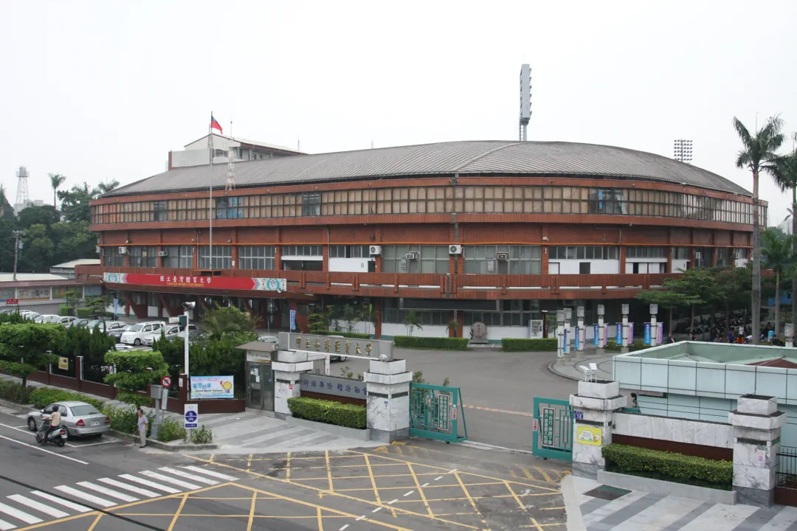 步驟二：確認校區 透過自動定位判斷離您最近的學校校區，或是由您自行手動選擇 步驟三：快速查詢 透過快速查詢列及選取常用的選取，進行設施查詢 步驟四：精準查詢 過"進階查詢"篩選條件常用設施、其他設施、建物等相關資訊縮小查詢範圍 步驟五：完成！ 其他設施 避難層出入口 避難層出入口設計請參考內政部 樓梯 建築物依規定應設置無障礙樓梯者，其設計請參考內政部 室內走廊 可使行動不便者獨立進出及通行之室內連續通路、走廊 觀眾席 設有固定座椅席位場所之輪椅觀眾席位 室外出入口 活動場所應依外部交通動線、停車空間等因素，設置至少一處主要出入口 無障礙寢室 宿舍無障礙寢室得參考本項（客房）相關規範辦理 其他設施 非屬前述項目之設施，如傢俱等。 機車停車位 參照內政部 無障礙設施規範 網站常用功能 快速查詢 快速定位您的位置，查詢周圍附近設施 設施全覽 指定目標學校，事先了解各項設施 FAQ 常見問答 空間分析是什麼意思？ 地理資訊系統很重要的一環，廣義而言，它指的是透過空間資料來運算，試圖找出各種事件在地理空間上有和關聯的一門科學。 快速查詢與空間分析有何不同？ 快速查詢:輸入查詢點的名稱後，就可找出所在位置與該地點資訊。 空間分析:是透過空間資料來運算，試圖找出各種事件在地理空間上有和關聯的一門科學。 如何與地圖進行互動查詢？ 用此工具，您可以查看互動式卡片，並提供地圖上區域的特定詳細數據。 FAQ 常見問答 空間分析是什麼意思？ 地理資訊系統很重要的一環，廣義而言，它指的是透過空間資料來運算，試圖找出各種事件在地理空間上有和關聯的一門科學。 快速查詢與空間分析有何不同？ 快速查詢:輸入查詢點的名稱後，就可找出所在位置與該地點資訊。 空間分析:是透過空間資料來運算，試圖找出各種事件在地理空間上有和關聯的一門科學。 如何與地圖進行互動查詢？ 用此工具，您可以查看互動式卡片，並提供地圖上區域的特定詳細數據。 系統登入 登入本系統，您的搜尋記錄永不遺漏 FAQ 常見問答 系統使用指南，讓快速上手 常見問題 空間分析是什麼意思？ 地理資訊系統很重要的一環，廣義而言，它指的是透過空間資料來運算，試圖找出各種事件在地理空間上有和關聯的一門科學。 快速查詢與空間分析有何不同？ 快速查詢:輸入查詢點的名稱後，就可找出所在位置與該地點資訊。 空間分析:是透過空間資料來運算，試圖找出各種事件在地理空間上有和關聯的一門科學。 如何與地圖進行互動查詢？ 用此工具，您可以查看互動式卡片，並提供地圖上區域的特定詳細數據。 回頂端 樓梯 目前顯示第1張，共3張 設施圖片說明一 設施圖片說明二 設施圖片說明三 1. 建築物設置規範請參考內政部《建築技術規則建築設計施工編》第10章及其下第167-2條規定。2. 建築物依規定應設置無障礙樓梯者，其設計請參考內政部《建築物無障礙設施設計規範》第3章規定。 3. 樓梯扶手請列入本項，其設計請參考內政部《建築物無障礙設施設計規範》207規定。 4. 民國97年7月1日《建築技術規則》修正施行前取得建造執照而未符合其規定者，倘改善確有困難，得參考《既有公共建築物無障礙設施替代改善計畫作業程序及認定原則》辦理。
浴室 無障礙停車位應設於最靠近建築物無障礙出入口或無障礙昇降機之便捷處。並應於車道入口處及車道沿路轉彎處設置明顯之指引標誌，引導無障礙停車之方向及位置。入口引導標誌應與行進方向垂直，以利辨識。 觀眾席 無障礙停車位應設於最靠近建築物無障礙出入口或無障礙昇降機之便捷處。並應於車道入口處及車道沿路轉彎處設置明顯之指引標誌，引導無障礙停車之方向及位置。入口引導標誌應與行進方向垂直，以利辨識。 室外出入口 無障礙停車位應設於最靠近建築物無障礙出入口或無障礙昇降機之便捷處。並應於車道入口處及車道沿路轉彎處設置明顯之指引標誌，引導無障礙停車之方向及位置。入口引導標誌應與行進方向垂直，以利辨識。 無障礙寢室 無障礙停車位應設於最靠近建築物無障礙出入口或無障礙昇降機之便捷處。並應於車道入口處及車道沿路轉彎處設置明顯之指引標誌，引導無障礙停車之方向及位置。入口引導標誌應與行進方向垂直，以利辨識。 其他設施 無障礙停車位應設於最靠近建築物無障礙出入口或無障礙昇降機之便捷處。並應於車道入口處及車道沿路轉彎處設置明顯之指引標誌，引導無障礙停車之方向及位置。入口引導標誌應與行進方向垂直，以利辨識。 機車停車位 無障礙停車位應設於最靠近建築物無障礙出入口或無障礙昇降機之便捷處。並應於車道入口處及車道沿路轉彎處設置明顯之指引標誌，引導無障礙停車之方向及位置。入口引導標誌應與行進方向垂直，以利辨識。 使用步驟 步驟一：確定學校 透過自動定位判斷離您最近的學校，或是由您自自行手動選擇 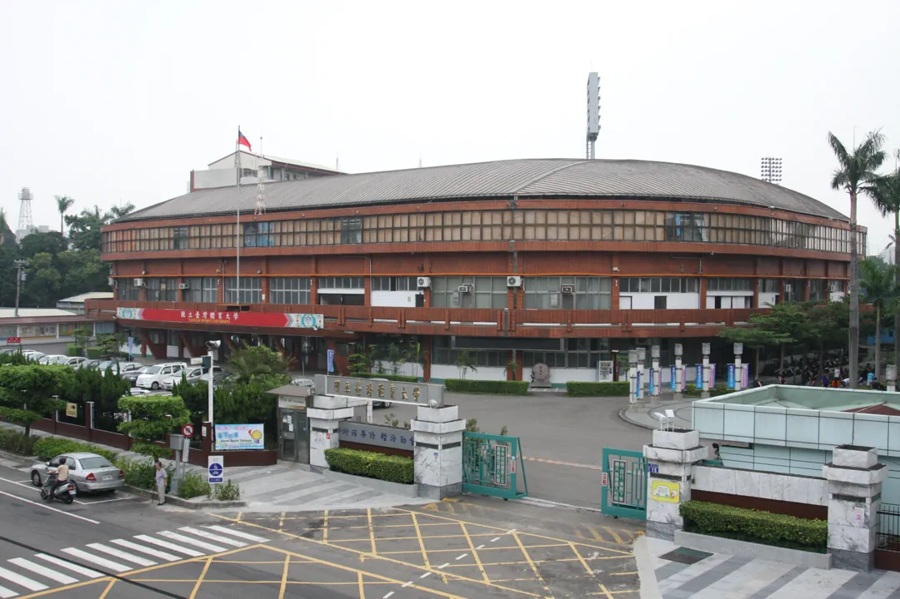 步驟二：確認校區 透過自動定位判斷離您最近的學校校區，或是由您自行手動選擇 步驟三：快速查詢 透過快速查詢列及選取常用的選取，進行設施查詢 步驟四：精準查詢 過"進階查詢"篩選條件常用設施、其他設施、建物等相關資訊縮小查詢範圍 步驟五：完成！ 其他設施 避難層出入口 避難層出入口設計請參考內政部 樓梯 建築物依規定應設置無障礙樓梯者，其設計請參考內政部 室內走廊 可使行動不便者獨立進出及通行之室內連續通路、走廊 觀眾席 設有固定座椅席位場所之輪椅觀眾席位 室外出入口 活動場所應依外部交通動線、停車空間等因素，設置至少一處主要出入口 無障礙寢室 宿舍無障礙寢室得參考本項（客房）相關規範辦理 其他設施 非屬前述項目之設施，如傢俱等。 機車停車位 參照內政部 無障礙設施規範 網站常用功能 快速查詢 快速定位您的位置，查詢周圍附近設施 設施全覽 指定目標學校，事先了解各項設施 FAQ 常見問答 空間分析是什麼意思？ 地理資訊系統很重要的一環，廣義而言，它指的是透過空間資料來運算，試圖找出各種事件在地理空間上有和關聯的一門科學。 快速查詢與空間分析有何不同？ 快速查詢:輸入查詢點的名稱後，就可找出所在位置與該地點資訊。 空間分析:是透過空間資料來運算，試圖找出各種事件在地理空間上有和關聯的一門科學。 如何與地圖進行互動查詢？ 用此工具，您可以查看互動式卡片，並提供地圖上區域的特定詳細數據。 FAQ 常見問答 空間分析是什麼意思？ 地理資訊系統很重要的一環，廣義而言，它指的是透過空間資料來運算，試圖找出各種事件在地理空間上有和關聯的一門科學。 快速查詢與空間分析有何不同？ 快速查詢:輸入查詢點的名稱後，就可找出所在位置與該地點資訊。 空間分析:是透過空間資料來運算，試圖找出各種事件在地理空間上有和關聯的一門科學。 如何與地圖進行互動查詢？ 用此工具，您可以查看互動式卡片，並提供地圖上區域的特定詳細數據。 系統登入 登入本系統，您的搜尋記錄永不遺漏 FAQ 常見問答 系統使用指南，讓快速上手 常見問題 空間分析是什麼意思？ 地理資訊系統很重要的一環，廣義而言，它指的是透過空間資料來運算，試圖找出各種事件在地理空間上有和關聯的一門科學。 快速查詢與空間分析有何不同？ 快速查詢:輸入查詢點的名稱後，就可找出所在位置與該地點資訊。 空間分析:是透過空間資料來運算，試圖找出各種事件在地理空間上有和關聯的一門科學。 如何與地圖進行互動查詢？ 用此工具，您可以查看互動式卡片，並提供地圖上區域的特定詳細數據。 回頂端 樓梯 目前顯示第1張，共3張 設施圖片說明一 設施圖片說明二 設施圖片說明三 1. 建築物設置規範請參考內政部《建築技術規則建築設計施工編》第10章及其下第167-2條規定。2. 建築物依規定應設置無障礙樓梯者，其設計請參考內政部《建築物無障礙設施設計規範》第3章規定。 3. 樓梯扶手請列入本項，其設計請參考內政部《建築物無障礙設施設計規範》207規定。 4. 民國97年7月1日《建築技術規則》修正施行前取得建造執照而未符合其規定者，倘改善確有困難，得參考《既有公共建築物無障礙設施替代改善計畫作業程序及認定原則》辦理。
觀眾席 無障礙停車位應設於最靠近建築物無障礙出入口或無障礙昇降機之便捷處。並應於車道入口處及車道沿路轉彎處設置明顯之指引標誌，引導無障礙停車之方向及位置。入口引導標誌應與行進方向垂直，以利辨識。 室外出入口 無障礙停車位應設於最靠近建築物無障礙出入口或無障礙昇降機之便捷處。並應於車道入口處及車道沿路轉彎處設置明顯之指引標誌，引導無障礙停車之方向及位置。入口引導標誌應與行進方向垂直，以利辨識。 無障礙寢室 無障礙停車位應設於最靠近建築物無障礙出入口或無障礙昇降機之便捷處。並應於車道入口處及車道沿路轉彎處設置明顯之指引標誌，引導無障礙停車之方向及位置。入口引導標誌應與行進方向垂直，以利辨識。 其他設施 無障礙停車位應設於最靠近建築物無障礙出入口或無障礙昇降機之便捷處。並應於車道入口處及車道沿路轉彎處設置明顯之指引標誌，引導無障礙停車之方向及位置。入口引導標誌應與行進方向垂直，以利辨識。 機車停車位 無障礙停車位應設於最靠近建築物無障礙出入口或無障礙昇降機之便捷處。並應於車道入口處及車道沿路轉彎處設置明顯之指引標誌，引導無障礙停車之方向及位置。入口引導標誌應與行進方向垂直，以利辨識。 使用步驟 步驟一：確定學校 透過自動定位判斷離您最近的學校，或是由您自自行手動選擇 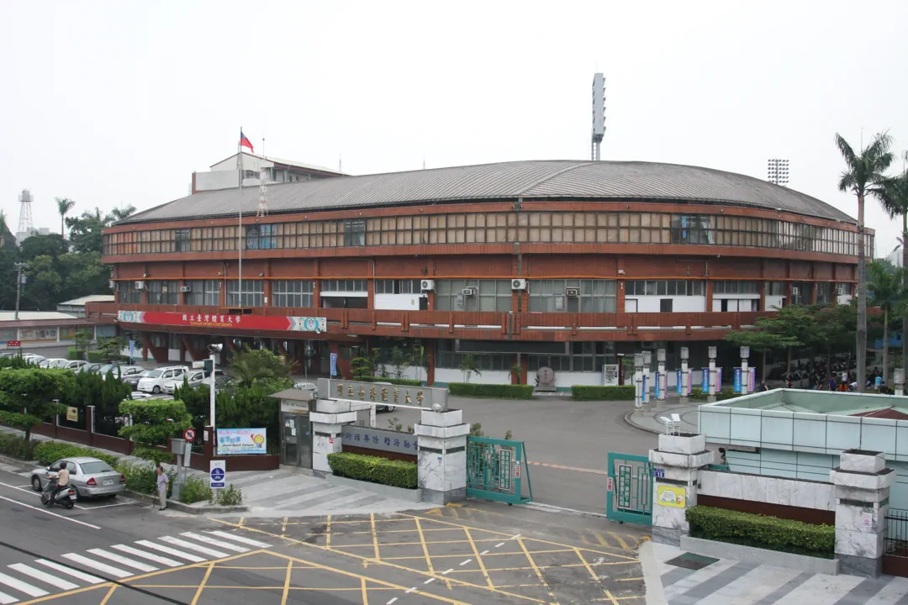 步驟二：確認校區 透過自動定位判斷離您最近的學校校區，或是由您自行手動選擇 步驟三：快速查詢 透過快速查詢列及選取常用的選取，進行設施查詢 步驟四：精準查詢 過"進階查詢"篩選條件常用設施、其他設施、建物等相關資訊縮小查詢範圍 步驟五：完成！ 其他設施 避難層出入口 避難層出入口設計請參考內政部 樓梯 建築物依規定應設置無障礙樓梯者，其設計請參考內政部 室內走廊 可使行動不便者獨立進出及通行之室內連續通路、走廊 觀眾席 設有固定座椅席位場所之輪椅觀眾席位 室外出入口 活動場所應依外部交通動線、停車空間等因素，設置至少一處主要出入口 無障礙寢室 宿舍無障礙寢室得參考本項（客房）相關規範辦理 其他設施 非屬前述項目之設施，如傢俱等。 機車停車位 參照內政部 無障礙設施規範 網站常用功能 快速查詢 快速定位您的位置，查詢周圍附近設施 設施全覽 指定目標學校，事先了解各項設施 FAQ 常見問答 空間分析是什麼意思？ 地理資訊系統很重要的一環，廣義而言，它指的是透過空間資料來運算，試圖找出各種事件在地理空間上有和關聯的一門科學。 快速查詢與空間分析有何不同？ 快速查詢:輸入查詢點的名稱後，就可找出所在位置與該地點資訊。 空間分析:是透過空間資料來運算，試圖找出各種事件在地理空間上有和關聯的一門科學。 如何與地圖進行互動查詢？ 用此工具，您可以查看互動式卡片，並提供地圖上區域的特定詳細數據。 FAQ 常見問答 空間分析是什麼意思？ 地理資訊系統很重要的一環，廣義而言，它指的是透過空間資料來運算，試圖找出各種事件在地理空間上有和關聯的一門科學。 快速查詢與空間分析有何不同？ 快速查詢:輸入查詢點的名稱後，就可找出所在位置與該地點資訊。 空間分析:是透過空間資料來運算，試圖找出各種事件在地理空間上有和關聯的一門科學。 如何與地圖進行互動查詢？ 用此工具，您可以查看互動式卡片，並提供地圖上區域的特定詳細數據。 系統登入 登入本系統，您的搜尋記錄永不遺漏 FAQ 常見問答 系統使用指南，讓快速上手 常見問題 空間分析是什麼意思？ 地理資訊系統很重要的一環，廣義而言，它指的是透過空間資料來運算，試圖找出各種事件在地理空間上有和關聯的一門科學。 快速查詢與空間分析有何不同？ 快速查詢:輸入查詢點的名稱後，就可找出所在位置與該地點資訊。 空間分析:是透過空間資料來運算，試圖找出各種事件在地理空間上有和關聯的一門科學。 如何與地圖進行互動查詢？ 用此工具，您可以查看互動式卡片，並提供地圖上區域的特定詳細數據。 回頂端 樓梯 目前顯示第1張，共3張 設施圖片說明一 設施圖片說明二 設施圖片說明三 1. 建築物設置規範請參考內政部《建築技術規則建築設計施工編》第10章及其下第167-2條規定。2. 建築物依規定應設置無障礙樓梯者，其設計請參考內政部《建築物無障礙設施設計規範》第3章規定。 3. 樓梯扶手請列入本項，其設計請參考內政部《建築物無障礙設施設計規範》207規定。 4. 民國97年7月1日《建築技術規則》修正施行前取得建造執照而未符合其規定者，倘改善確有困難，得參考《既有公共建築物無障礙設施替代改善計畫作業程序及認定原則》辦理。
室外出入口 無障礙停車位應設於最靠近建築物無障礙出入口或無障礙昇降機之便捷處。並應於車道入口處及車道沿路轉彎處設置明顯之指引標誌，引導無障礙停車之方向及位置。入口引導標誌應與行進方向垂直，以利辨識。 無障礙寢室 無障礙停車位應設於最靠近建築物無障礙出入口或無障礙昇降機之便捷處。並應於車道入口處及車道沿路轉彎處設置明顯之指引標誌，引導無障礙停車之方向及位置。入口引導標誌應與行進方向垂直，以利辨識。 其他設施 無障礙停車位應設於最靠近建築物無障礙出入口或無障礙昇降機之便捷處。並應於車道入口處及車道沿路轉彎處設置明顯之指引標誌，引導無障礙停車之方向及位置。入口引導標誌應與行進方向垂直，以利辨識。 機車停車位 無障礙停車位應設於最靠近建築物無障礙出入口或無障礙昇降機之便捷處。並應於車道入口處及車道沿路轉彎處設置明顯之指引標誌，引導無障礙停車之方向及位置。入口引導標誌應與行進方向垂直，以利辨識。 使用步驟 步驟一：確定學校 透過自動定位判斷離您最近的學校，或是由您自自行手動選擇 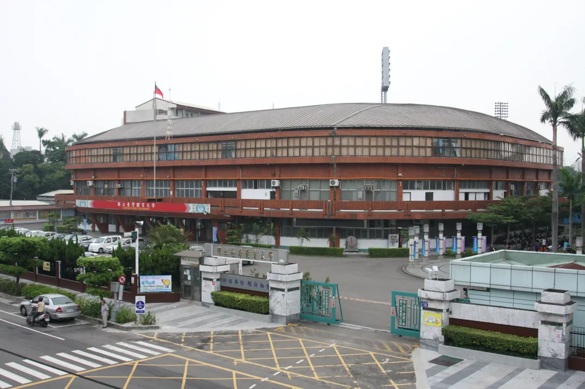 步驟二：確認校區 透過自動定位判斷離您最近的學校校區，或是由您自行手動選擇 步驟三：快速查詢 透過快速查詢列及選取常用的選取，進行設施查詢 步驟四：精準查詢 過"進階查詢"篩選條件常用設施、其他設施、建物等相關資訊縮小查詢範圍 步驟五：完成！ 其他設施 避難層出入口 避難層出入口設計請參考內政部 樓梯 建築物依規定應設置無障礙樓梯者，其設計請參考內政部 室內走廊 可使行動不便者獨立進出及通行之室內連續通路、走廊 觀眾席 設有固定座椅席位場所之輪椅觀眾席位 室外出入口 活動場所應依外部交通動線、停車空間等因素，設置至少一處主要出入口 無障礙寢室 宿舍無障礙寢室得參考本項（客房）相關規範辦理 其他設施 非屬前述項目之設施，如傢俱等。 機車停車位 參照內政部 無障礙設施規範 網站常用功能 快速查詢 快速定位您的位置，查詢周圍附近設施 設施全覽 指定目標學校，事先了解各項設施 FAQ 常見問答 空間分析是什麼意思？ 地理資訊系統很重要的一環，廣義而言，它指的是透過空間資料來運算，試圖找出各種事件在地理空間上有和關聯的一門科學。 快速查詢與空間分析有何不同？ 快速查詢:輸入查詢點的名稱後，就可找出所在位置與該地點資訊。 空間分析:是透過空間資料來運算，試圖找出各種事件在地理空間上有和關聯的一門科學。 如何與地圖進行互動查詢？ 用此工具，您可以查看互動式卡片，並提供地圖上區域的特定詳細數據。 FAQ 常見問答 空間分析是什麼意思？ 地理資訊系統很重要的一環，廣義而言，它指的是透過空間資料來運算，試圖找出各種事件在地理空間上有和關聯的一門科學。 快速查詢與空間分析有何不同？ 快速查詢:輸入查詢點的名稱後，就可找出所在位置與該地點資訊。 空間分析:是透過空間資料來運算，試圖找出各種事件在地理空間上有和關聯的一門科學。 如何與地圖進行互動查詢？ 用此工具，您可以查看互動式卡片，並提供地圖上區域的特定詳細數據。 系統登入 登入本系統，您的搜尋記錄永不遺漏 FAQ 常見問答 系統使用指南，讓快速上手 常見問題 空間分析是什麼意思？ 地理資訊系統很重要的一環，廣義而言，它指的是透過空間資料來運算，試圖找出各種事件在地理空間上有和關聯的一門科學。 快速查詢與空間分析有何不同？ 快速查詢:輸入查詢點的名稱後，就可找出所在位置與該地點資訊。 空間分析:是透過空間資料來運算，試圖找出各種事件在地理空間上有和關聯的一門科學。 如何與地圖進行互動查詢？ 用此工具，您可以查看互動式卡片，並提供地圖上區域的特定詳細數據。 回頂端 樓梯 目前顯示第1張，共3張 設施圖片說明一 設施圖片說明二 設施圖片說明三 1. 建築物設置規範請參考內政部《建築技術規則建築設計施工編》第10章及其下第167-2條規定。2. 建築物依規定應設置無障礙樓梯者，其設計請參考內政部《建築物無障礙設施設計規範》第3章規定。 3. 樓梯扶手請列入本項，其設計請參考內政部《建築物無障礙設施設計規範》207規定。 4. 民國97年7月1日《建築技術規則》修正施行前取得建造執照而未符合其規定者，倘改善確有困難，得參考《既有公共建築物無障礙設施替代改善計畫作業程序及認定原則》辦理。
無障礙寢室 無障礙停車位應設於最靠近建築物無障礙出入口或無障礙昇降機之便捷處。並應於車道入口處及車道沿路轉彎處設置明顯之指引標誌，引導無障礙停車之方向及位置。入口引導標誌應與行進方向垂直，以利辨識。 其他設施 無障礙停車位應設於最靠近建築物無障礙出入口或無障礙昇降機之便捷處。並應於車道入口處及車道沿路轉彎處設置明顯之指引標誌，引導無障礙停車之方向及位置。入口引導標誌應與行進方向垂直，以利辨識。 機車停車位 無障礙停車位應設於最靠近建築物無障礙出入口或無障礙昇降機之便捷處。並應於車道入口處及車道沿路轉彎處設置明顯之指引標誌，引導無障礙停車之方向及位置。入口引導標誌應與行進方向垂直，以利辨識。 使用步驟 步驟一：確定學校 透過自動定位判斷離您最近的學校，或是由您自自行手動選擇 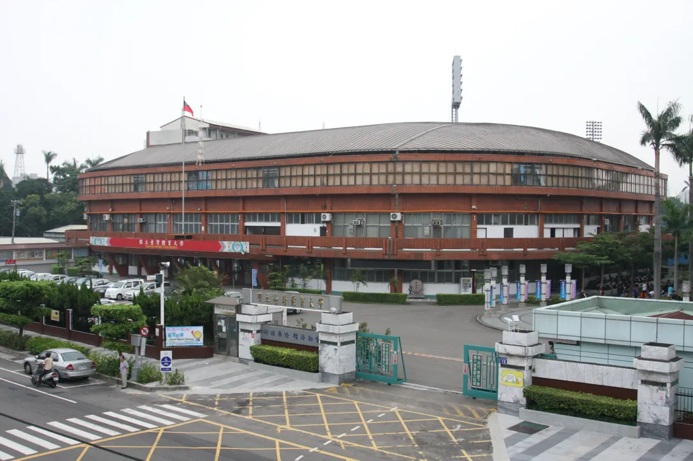 步驟二：確認校區 透過自動定位判斷離您最近的學校校區，或是由您自行手動選擇 步驟三：快速查詢 透過快速查詢列及選取常用的選取，進行設施查詢 步驟四：精準查詢 過"進階查詢"篩選條件常用設施、其他設施、建物等相關資訊縮小查詢範圍 步驟五：完成！ 其他設施 避難層出入口 避難層出入口設計請參考內政部 樓梯 建築物依規定應設置無障礙樓梯者，其設計請參考內政部 室內走廊 可使行動不便者獨立進出及通行之室內連續通路、走廊 觀眾席 設有固定座椅席位場所之輪椅觀眾席位 室外出入口 活動場所應依外部交通動線、停車空間等因素，設置至少一處主要出入口 無障礙寢室 宿舍無障礙寢室得參考本項（客房）相關規範辦理 其他設施 非屬前述項目之設施，如傢俱等。 機車停車位 參照內政部 無障礙設施規範 網站常用功能 快速查詢 快速定位您的位置，查詢周圍附近設施 設施全覽 指定目標學校，事先了解各項設施 FAQ 常見問答 空間分析是什麼意思？ 地理資訊系統很重要的一環，廣義而言，它指的是透過空間資料來運算，試圖找出各種事件在地理空間上有和關聯的一門科學。 快速查詢與空間分析有何不同？ 快速查詢:輸入查詢點的名稱後，就可找出所在位置與該地點資訊。 空間分析:是透過空間資料來運算，試圖找出各種事件在地理空間上有和關聯的一門科學。 如何與地圖進行互動查詢？ 用此工具，您可以查看互動式卡片，並提供地圖上區域的特定詳細數據。 FAQ 常見問答 空間分析是什麼意思？ 地理資訊系統很重要的一環，廣義而言，它指的是透過空間資料來運算，試圖找出各種事件在地理空間上有和關聯的一門科學。 快速查詢與空間分析有何不同？ 快速查詢:輸入查詢點的名稱後，就可找出所在位置與該地點資訊。 空間分析:是透過空間資料來運算，試圖找出各種事件在地理空間上有和關聯的一門科學。 如何與地圖進行互動查詢？ 用此工具，您可以查看互動式卡片，並提供地圖上區域的特定詳細數據。 系統登入 登入本系統，您的搜尋記錄永不遺漏 FAQ 常見問答 系統使用指南，讓快速上手 常見問題 空間分析是什麼意思？ 地理資訊系統很重要的一環，廣義而言，它指的是透過空間資料來運算，試圖找出各種事件在地理空間上有和關聯的一門科學。 快速查詢與空間分析有何不同？ 快速查詢:輸入查詢點的名稱後，就可找出所在位置與該地點資訊。 空間分析:是透過空間資料來運算，試圖找出各種事件在地理空間上有和關聯的一門科學。 如何與地圖進行互動查詢？ 用此工具，您可以查看互動式卡片，並提供地圖上區域的特定詳細數據。 回頂端 樓梯 目前顯示第1張，共3張 設施圖片說明一 設施圖片說明二 設施圖片說明三 1. 建築物設置規範請參考內政部《建築技術規則建築設計施工編》第10章及其下第167-2條規定。2. 建築物依規定應設置無障礙樓梯者，其設計請參考內政部《建築物無障礙設施設計規範》第3章規定。 3. 樓梯扶手請列入本項，其設計請參考內政部《建築物無障礙設施設計規範》207規定。 4. 民國97年7月1日《建築技術規則》修正施行前取得建造執照而未符合其規定者，倘改善確有困難，得參考《既有公共建築物無障礙設施替代改善計畫作業程序及認定原則》辦理。
其他設施 無障礙停車位應設於最靠近建築物無障礙出入口或無障礙昇降機之便捷處。並應於車道入口處及車道沿路轉彎處設置明顯之指引標誌，引導無障礙停車之方向及位置。入口引導標誌應與行進方向垂直，以利辨識。 機車停車位 無障礙停車位應設於最靠近建築物無障礙出入口或無障礙昇降機之便捷處。並應於車道入口處及車道沿路轉彎處設置明顯之指引標誌，引導無障礙停車之方向及位置。入口引導標誌應與行進方向垂直，以利辨識。 使用步驟 步驟一：確定學校 透過自動定位判斷離您最近的學校，或是由您自自行手動選擇 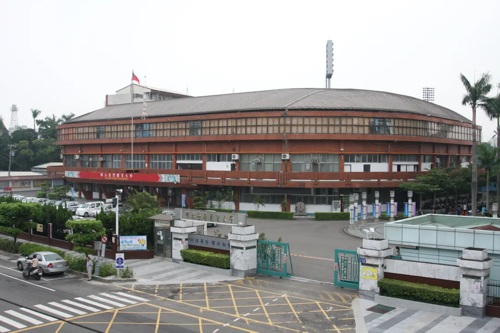 步驟二：確認校區 透過自動定位判斷離您最近的學校校區，或是由您自行手動選擇 步驟三：快速查詢 透過快速查詢列及選取常用的選取，進行設施查詢 步驟四：精準查詢 過"進階查詢"篩選條件常用設施、其他設施、建物等相關資訊縮小查詢範圍 步驟五：完成！ 其他設施 避難層出入口 避難層出入口設計請參考內政部 樓梯 建築物依規定應設置無障礙樓梯者，其設計請參考內政部 室內走廊 可使行動不便者獨立進出及通行之室內連續通路、走廊 觀眾席 設有固定座椅席位場所之輪椅觀眾席位 室外出入口 活動場所應依外部交通動線、停車空間等因素，設置至少一處主要出入口 無障礙寢室 宿舍無障礙寢室得參考本項（客房）相關規範辦理 其他設施 非屬前述項目之設施，如傢俱等。 機車停車位 參照內政部 無障礙設施規範 網站常用功能 快速查詢 快速定位您的位置，查詢周圍附近設施 設施全覽 指定目標學校，事先了解各項設施 FAQ 常見問答 空間分析是什麼意思？ 地理資訊系統很重要的一環，廣義而言，它指的是透過空間資料來運算，試圖找出各種事件在地理空間上有和關聯的一門科學。 快速查詢與空間分析有何不同？ 快速查詢:輸入查詢點的名稱後，就可找出所在位置與該地點資訊。 空間分析:是透過空間資料來運算，試圖找出各種事件在地理空間上有和關聯的一門科學。 如何與地圖進行互動查詢？ 用此工具，您可以查看互動式卡片，並提供地圖上區域的特定詳細數據。 FAQ 常見問答 空間分析是什麼意思？ 地理資訊系統很重要的一環，廣義而言，它指的是透過空間資料來運算，試圖找出各種事件在地理空間上有和關聯的一門科學。 快速查詢與空間分析有何不同？ 快速查詢:輸入查詢點的名稱後，就可找出所在位置與該地點資訊。 空間分析:是透過空間資料來運算，試圖找出各種事件在地理空間上有和關聯的一門科學。 如何與地圖進行互動查詢？ 用此工具，您可以查看互動式卡片，並提供地圖上區域的特定詳細數據。 系統登入 登入本系統，您的搜尋記錄永不遺漏 FAQ 常見問答 系統使用指南，讓快速上手 常見問題 空間分析是什麼意思？ 地理資訊系統很重要的一環，廣義而言，它指的是透過空間資料來運算，試圖找出各種事件在地理空間上有和關聯的一門科學。 快速查詢與空間分析有何不同？ 快速查詢:輸入查詢點的名稱後，就可找出所在位置與該地點資訊。 空間分析:是透過空間資料來運算，試圖找出各種事件在地理空間上有和關聯的一門科學。 如何與地圖進行互動查詢？ 用此工具，您可以查看互動式卡片，並提供地圖上區域的特定詳細數據。 回頂端 樓梯 目前顯示第1張，共3張 設施圖片說明一 設施圖片說明二 設施圖片說明三 1. 建築物設置規範請參考內政部《建築技術規則建築設計施工編》第10章及其下第167-2條規定。2. 建築物依規定應設置無障礙樓梯者，其設計請參考內政部《建築物無障礙設施設計規範》第3章規定。 3. 樓梯扶手請列入本項，其設計請參考內政部《建築物無障礙設施設計規範》207規定。 4. 民國97年7月1日《建築技術規則》修正施行前取得建造執照而未符合其規定者，倘改善確有困難，得參考《既有公共建築物無障礙設施替代改善計畫作業程序及認定原則》辦理。
機車停車位 無障礙停車位應設於最靠近建築物無障礙出入口或無障礙昇降機之便捷處。並應於車道入口處及車道沿路轉彎處設置明顯之指引標誌，引導無障礙停車之方向及位置。入口引導標誌應與行進方向垂直，以利辨識。 使用步驟 步驟一：確定學校 透過自動定位判斷離您最近的學校，或是由您自自行手動選擇 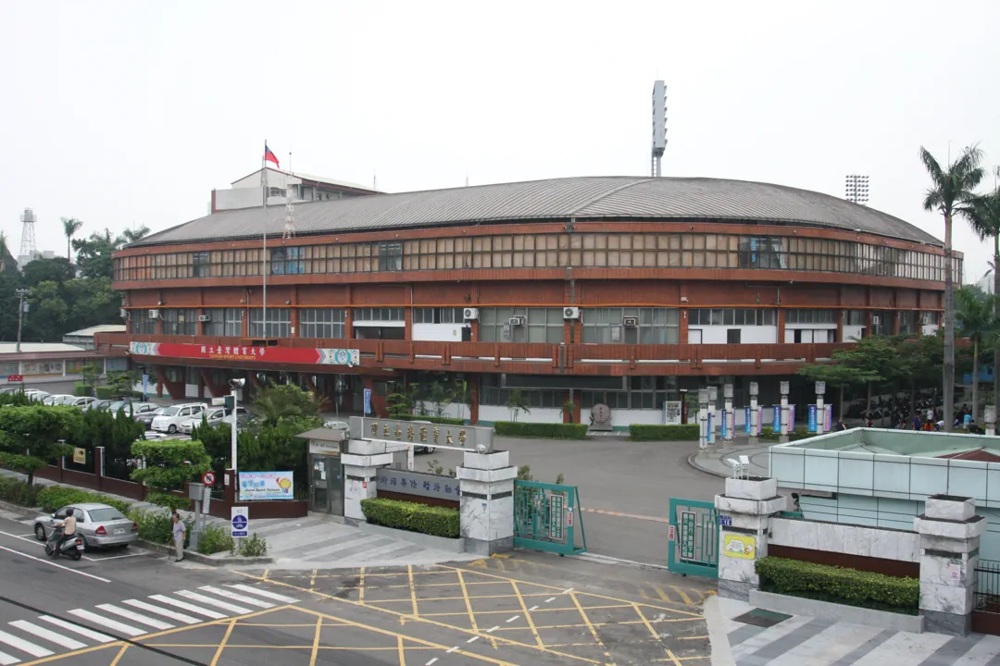 步驟二：確認校區 透過自動定位判斷離您最近的學校校區，或是由您自行手動選擇 步驟三：快速查詢 透過快速查詢列及選取常用的選取，進行設施查詢 步驟四：精準查詢 過"進階查詢"篩選條件常用設施、其他設施、建物等相關資訊縮小查詢範圍 步驟五：完成！ 其他設施 避難層出入口 避難層出入口設計請參考內政部 樓梯 建築物依規定應設置無障礙樓梯者，其設計請參考內政部 室內走廊 可使行動不便者獨立進出及通行之室內連續通路、走廊 觀眾席 設有固定座椅席位場所之輪椅觀眾席位 室外出入口 活動場所應依外部交通動線、停車空間等因素，設置至少一處主要出入口 無障礙寢室 宿舍無障礙寢室得參考本項（客房）相關規範辦理 其他設施 非屬前述項目之設施，如傢俱等。 機車停車位 參照內政部 無障礙設施規範 網站常用功能 快速查詢 快速定位您的位置，查詢周圍附近設施 設施全覽 指定目標學校，事先了解各項設施 FAQ 常見問答 空間分析是什麼意思？ 地理資訊系統很重要的一環，廣義而言，它指的是透過空間資料來運算，試圖找出各種事件在地理空間上有和關聯的一門科學。 快速查詢與空間分析有何不同？ 快速查詢:輸入查詢點的名稱後，就可找出所在位置與該地點資訊。 空間分析:是透過空間資料來運算，試圖找出各種事件在地理空間上有和關聯的一門科學。 如何與地圖進行互動查詢？ 用此工具，您可以查看互動式卡片，並提供地圖上區域的特定詳細數據。 FAQ 常見問答 空間分析是什麼意思？ 地理資訊系統很重要的一環，廣義而言，它指的是透過空間資料來運算，試圖找出各種事件在地理空間上有和關聯的一門科學。 快速查詢與空間分析有何不同？ 快速查詢:輸入查詢點的名稱後，就可找出所在位置與該地點資訊。 空間分析:是透過空間資料來運算，試圖找出各種事件在地理空間上有和關聯的一門科學。 如何與地圖進行互動查詢？ 用此工具，您可以查看互動式卡片，並提供地圖上區域的特定詳細數據。 系統登入 登入本系統，您的搜尋記錄永不遺漏 FAQ 常見問答 系統使用指南，讓快速上手 常見問題 空間分析是什麼意思？ 地理資訊系統很重要的一環，廣義而言，它指的是透過空間資料來運算，試圖找出各種事件在地理空間上有和關聯的一門科學。 快速查詢與空間分析有何不同？ 快速查詢:輸入查詢點的名稱後，就可找出所在位置與該地點資訊。 空間分析:是透過空間資料來運算，試圖找出各種事件在地理空間上有和關聯的一門科學。 如何與地圖進行互動查詢？ 用此工具，您可以查看互動式卡片，並提供地圖上區域的特定詳細數據。 回頂端 樓梯 目前顯示第1張，共3張 設施圖片說明一 設施圖片說明二 設施圖片說明三 1. 建築物設置規範請參考內政部《建築技術規則建築設計施工編》第10章及其下第167-2條規定。2. 建築物依規定應設置無障礙樓梯者，其設計請參考內政部《建築物無障礙設施設計規範》第3章規定。 3. 樓梯扶手請列入本項，其設計請參考內政部《建築物無障礙設施設計規範》207規定。 4. 民國97年7月1日《建築技術規則》修正施行前取得建造執照而未符合其規定者，倘改善確有困難，得參考《既有公共建築物無障礙設施替代改善計畫作業程序及認定原則》辦理。
FAQ 常見問答 空間分析是什麼意思？ 地理資訊系統很重要的一環，廣義而言，它指的是透過空間資料來運算，試圖找出各種事件在地理空間上有和關聯的一門科學。 快速查詢與空間分析有何不同？ 快速查詢:輸入查詢點的名稱後，就可找出所在位置與該地點資訊。 空間分析:是透過空間資料來運算，試圖找出各種事件在地理空間上有和關聯的一門科學。 如何與地圖進行互動查詢？ 用此工具，您可以查看互動式卡片，並提供地圖上區域的特定詳細數據。
FAQ 常見問答 空間分析是什麼意思？ 地理資訊系統很重要的一環，廣義而言，它指的是透過空間資料來運算，試圖找出各種事件在地理空間上有和關聯的一門科學。 快速查詢與空間分析有何不同？ 快速查詢:輸入查詢點的名稱後，就可找出所在位置與該地點資訊。 空間分析:是透過空間資料來運算，試圖找出各種事件在地理空間上有和關聯的一門科學。 如何與地圖進行互動查詢？ 用此工具，您可以查看互動式卡片，並提供地圖上區域的特定詳細數據。